こめかみっ！1話はだいぶヤバいんだけど、後半になるほど作画こそローエンドになってくるが全体としては普通に見れるくらいになってるのが不思議
タイムライン要約
今日のまとめ
このタイムラインの要約は以下の通りです。
* **AI・テクノロジーの進展と議論:** Anthropicの上場申請とSBIとの連携、AppleのAIローカル処理戦略、NVIDIAの新しい画像検出モデルの注目、ローカルAIの有用性に関する議論など、生成AI技術とそのビジネス展開に関する情報が活発に報じられています。また、KeychronのキーボードプロトタイプやAcerの携帯ゲーム機といった新デバイスの開発情報も含まれます。
* **多様なゲームコンテンツの発表とイベント:** 多数の新作ゲーム（RPG、ホラー、アクション、MMORPGなど）の発表、体験版の配信、発売日の決定が目立ちます。Nintendo Musicのブラウザ版公開やポケモンカード30周年記念パック発売など、幅広いゲーム関連のニュースが共有されており、特に6月はゲーム発表の季節として多くの情報が発信されています。
* **経済・社会の動向と気象災害:** 日本経済新聞からの企業動向や市場に関するニュース（株価変動、企業連携、人材派遣業界の問題、消費におけるAI利用など）が多数を占めます。また、台風6号の接近に伴う運行情報や線状降水帯の恐れなど、気象災害に関する警戒情報が繰り返し投稿されています。
* **AI・テクノロジーの進展と議論:** Anthropicの上場申請とSBIとの連携、AppleのAIローカル処理戦略、NVIDIAの新しい画像検出モデルの注目、ローカルAIの有用性に関する議論など、生成AI技術とそのビジネス展開に関する情報が活発に報じられています。また、KeychronのキーボードプロトタイプやAcerの携帯ゲーム機といった新デバイスの開発情報も含まれます。
* **多様なゲームコンテンツの発表とイベント:** 多数の新作ゲーム（RPG、ホラー、アクション、MMORPGなど）の発表、体験版の配信、発売日の決定が目立ちます。Nintendo Musicのブラウザ版公開やポケモンカード30周年記念パック発売など、幅広いゲーム関連のニュースが共有されており、特に6月はゲーム発表の季節として多くの情報が発信されています。
* **経済・社会の動向と気象災害:** 日本経済新聞からの企業動向や市場に関するニュース（株価変動、企業連携、人材派遣業界の問題、消費におけるAI利用など）が多数を占めます。また、台風6号の接近に伴う運行情報や線状降水帯の恐れなど、気象災害に関する警戒情報が繰り返し投稿されています。
AppleのAIはローカル処理？ プライバシーとセキュリティを武器に
AppleのAIはローカル処理？ プライバシーとセキュリティを武器に | ギズモード・ジャパン
NVidiaがオープン（商用利用できない）で出したLocateAnythingってモデルがなんか人気らしい。これはプロンプトで指定した物体を画像から検出してくれるブツ。SAM3と変わんねえだろと思うんですが、なんか高速だとかなんとか

NVIDIA AI
@NVIDIAAI
私たちの研究チームからのこの #CVPR2026 論文が @HuggingFace で #1 トレンドになっています
LocateAnything
アンソロピックが上場申請 OpenAI追い越しへ「軍資金」確保急ぐ
アンソロピックが上場申請 OpenAI追い越しへ「軍資金」確保急ぐ
いやーお祭り終わっちゃうの結構キてるかも
大黒プロムナード 混むかなあ
スラッシュコマンドの源流は IRC からだったのか（初耳）
Kenn Ejima
@kenn
スラッシュコマンドはバカげてる
/path/to/file や URL パスはコーディングのあらゆる場所にある
チャットだからって、Discord 経由で Slack 経由で IRC から継承されたすべての慣習を引き継ぐ必要はない
でも `workflow` を予約語として扱うのは次元が違うレベルだ
エアコンクリーニングが終了。やはりそのエアコンメーカーのクリーニングだと分解工程が安心できる。（ちなみに三菱）熱交換器とシロッコファンはさすがに自分では手が出せず。清掃後は空気が違う！！（・∀・）ノ
アメリカのテック界隈って良くも悪くも傲慢さあるよな…
クロマトの社員ってことは山下監督お抱えなんだろうけどインタビュー出たりしないかなあ
今年も台風の季節か〜 昨日外出かけて正解だったな
「Nintendo Music」ブラウザ版が公開 PCやタブレットでも利用可能に 車内再生にも対応
「Nintendo Music」ブラウザ版が公開 PCやタブレットでも利用可能に 車内再生にも対応
SBI、米アンソロピックと連携 自社アプリに組み込み
SBI、米アンソロピックと連携 自社アプリに組み込み
買い切り型のアニメ調オープンワールドRPG「ドラゴンソード:アウェイクニング」，無料体験版を6月5日2：00から6月24日2：00までSteamで配信
https://
4gamer.net/s/G099933.2606
02021
…
全8章のうちの第1章をプレイでき，全19キャラのうち9キャラを体験できる。プレイ時間は1時間から2時間想定
AI絵を手で模写するのは、AI絵のつまらなさを緩和する手段としてアリだと思う。トレスだけでもマシになるし模写なら描き手の個性が反映されやすくなるのでなお良い。結局のところ今までだって絵が上手い人ってつまり死ぬほど模写しまくったから上手くなったという事だから模写しまくるのがAI絵になって
「DIVE or DIE - Children of Rain」，7月21日に発売決定。限られた時間のなかで聖遺物を回収し，大洪水を防ぐアクションアドベンチャー
https://
4gamer.net/s/G098451.2606
02019
…
潜水士が海中を探索する様子やキャラクターに襲いかかってくる怪物など，ゲームプレイシーンを確認できる最新の映像も公開された
10年は愛用できそう。使い勝手が良くて作りもタフ、シンプルイズベストなショルダーバッグ #BuyPR
10年は愛用できそう。使い勝手が良くて作りもタフ、シンプルイズベストなショルダーバッグ | ギズモード・ジャパン
親が見てたのをたまたま見てたけど面白かった、こういう番組が作れるのはすごい
大学や心霊スポットの写真を撮影して，心霊現象の全貌に迫る。ストーリー重視のホラーADV「白栄大学 0号館」，6月18日にリリース予定
https://
4gamer.net/s/G101160.2606
02012
…
プレイヤーは心霊サークルのメンバーとして探索を行う。一部エリアでは，危険な存在から逃げながら探索をしなければならない
「REANIMAL」Switch2版，追加コンテンツ「REANIMAL: The Expanded World」の配信日を延期
https://
4gamer.net/s/G096309.2606
02020
…
疑心暗鬼の潜水艦で情報の取捨選択を行う『False Echo』ゲームプレイトレイラー！
https://
gamespark.jp/article/2026/0
6/02/167262.html?utm_source=twitter&utm_medium=social&utm_content=tweet
…
異なる性能を持つ2人のキャラクターで戦う，高速2Dアクション「Gravity Circuit 2」発表。前作はSteamで期間限定無料配布中
https://
4gamer.net/s/G101168.2606
02017
…
前作の主人公・カイに加え，遠距離攻撃を得意とするケーブルが新たに登場。2027年に発売予定
新作MMORPG「ヴァンピール」，正式サービスを7月に開始。オフラインイベント「ヴァンピール ディナーパーティー」を6月20日に開催
https://
4gamer.net/s/G092103.2606
02015
…
イベントには抽選で150人が参加可能だ。応募期間は6月14日まで
Haruhiko Okumuraさんがリポスト
取り戻しました。
家庭教師をしているので、高校生を装って質問したことが原因かもしれないです。生成AI失うと困るので、規約は守って使いましょう。
Haru
@Haru_ut_ap
Claudeのアカウントが停止されてしまった。
子供によって使用された形跡があると言われた。なぜだ。
魔女ライフシミュレーション「REKA」，正式発売日が8月18日に決定。鶏の足で歩く家とともに旅するサンドボックス型アドベンチャー
https://
4gamer.net/s/G071564.2606
02016
…
動くコテージを自由に建築・カスタマイズ。約2年の早期アクセスを経て正式リリースへ
『鳴潮』2周年を幕張メッセでお祝い。巨大「エクソストライダー」から声優トーク、音楽ライブまで盛りだくさん！「2nd Anniversary Fes.」レポート
https://
gamespark.jp/article/2026/0
6/02/167261.html?utm_source=twitter&utm_medium=social&utm_content=tweet
…
神奈川県の海で女児2人が、近くの港で成人女性1人が浮いた状態で見つかる #酷い話・事件
神奈川県の海で女児2人が、近くの港で成人女性1人が浮いた状態で見つかる - オレ的ゲーム速報@刃の記事ページ
jin115.com
買い物で生成AI利用25% 時短や納得感が向上、博報堂研究所調べ
買い物で生成AI利用25% 時短や納得感が向上、博報堂研究所調べ
これか。3日00時Z(09時JST)の予報高層天気図。
FXFE5782 700hPa上昇流-266
FXJP854 θe>345Kの暖湿気流入
台風6号に伴うとはいえ、なかなかレアっぽい感じがするから天気図、保存しておくかw
しかし、なかなか嫌な予感がしますわな。
https://
jma.go.jp/bosai/numericm
ap/data/nwpmap/fxfe5782_00.pdf
…
https://
jma.go.jp/bosai/numericm
ap/data/nwpmap/fxjp854_12.pdf
…
台風6号、四国など8県で線状降水帯の恐れ 九州発着便に欠航相次ぐ
台風6号、四国など8県で線状降水帯の恐れ 九州発着便に欠航相次ぐ
Torishima / INTPさんがリポスト
ちなみにここで言われている「作家や市場や顧客を育てる意識」というのは「IP開発能力」で、ほとんどのアニメ会社にそんなものは無く（世代をまたいで継続しているのは東映やサンライズといった数社）大部分を出版社が担っているので、アニメ会社がいくら統合されてもたいして問題はないと思う。
以前エルドレッドとマクレーンが雑談で「今のMLBは凡打になってもバレルだからよし！ と選手もベンチも喜んでいる」「凡打で？ 本気か？」「日本の野球はああなって欲しくないなあ」みたいな話をしていた記憶あり。MLBが変わってしまったのか、日本が遅れているのか。 #carp
ふすまバファローズ
@HK_Buf
これ、面白いです
ボブ・シーモアのコメントにわかりみが深い
「日本では打球速度や角度より結果が大事で」
「バレルできてる！ってなっても」
「アウトになったら終わり（笑）みたいな」
ほんとそれだと思います
Torishima / INTPさんがリポスト
アニメに対する否定的な個人的意見を集めすぎた現状を『こめかみっ！Girls』に一身に注目させる「こめかみっ！レクイエム」だ。
ひっく！
@hikkie_consider
皆さん、冷静に立ち止まって再考してみてください。あなたが回答したそのアニメ1話は、本当に「こめかみっ！Girls」1話よりもつまらないですか？このラインを基準にお考え下さい。
https://
animestore.docomo.ne.jp/animestore/ci_
pc?workId=28743
…
Keychronが開発中のマイクロスイッチ。3つの感触があります。
スイッチ単体での販売も視野に入っているそうです。
#COMPUTEX2026
@KeychronJP
クリッキー/タクタイル/リニア
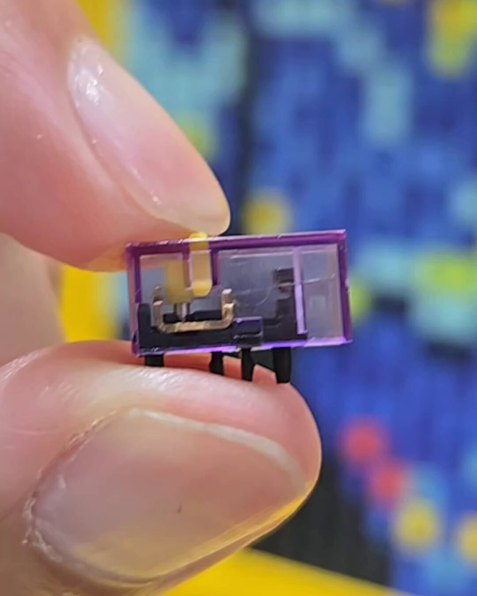
Torishima / INTPさんがリポスト
現状の小規模の会社が乱立している状態だって「ロングテイルでの経営戦略や、作家や市場や顧客を育てる意識」なんてものは無いというか、会社規模が大きい方が余裕を持ってそれができるという話なのでは…
喜多野土竜 ⋈
@mogura2001
KADOKAWAの夏野剛社長の、クリエイターが断片化したスタジオに分散しているのではなく、ディズニーやマーベルのようなグローバル企業と競争できる大規模な会社に統合されるべきだ云々という主張が、議論を呼んでいます。
貝さんさんさんがリポスト
潮田さんがいないと今の俺はいないレベルで、働きやすい体制を整えてくれてます…
TVアニメ『上伊那ぼたん、酔へる姿は百合の花』
@kamiina_anime
第8話のあとがき...
￣￣￣￣￣￣￣￣￣
noteを更新しました
https://
note.com/kamiina_anime/
n/n95e5980b8fed
…
#上伊那ぼたん
Acerからストリーミング専用の携帯ゲーム機、Nitro Blaze Link登場
Acerからストリーミング専用の携帯ゲーム機、Nitro Blaze Link登場 | ギズモード・ジャパン
【SALE最終日】アウトドアのお供に。Ankerのスピーカー「Soundcore 3」が過去最安！ #BuyPR
【SALE最終日】アウトドアのお供に。Ankerのスピーカー「Soundcore 3」が過去最安！ | ギズモード・ジャパン
Torishima / INTPさんがリポスト
ここまでくるとアライメントの上手い下手のほうがよほど秘伝のタレになってくるような。
今井翔太 / Shota Imai@えるエル
@ImAI_Eruel
AnthropicとOpenAIについては、Anthropic側の最高火力であるMythosが突出しているだけで、ユーザーが使えるモデルではOpenAIが安定して強いという状況が続いており、これだけを見ると、OpenAIがMythosレベルの物を作れない理由（Anthropicの秘伝のタレ説）は特にないと思います。
「ポケカ」30周年を記念した拡張パック「30th CELEBRATION」が9月16日に発売。すべてのカードがキラカードに
https://
4gamer.net/s/G025620.2606
02009
…
ミュウex，ミュウツーexのFURや，ポケモンカードゲームの歴史を象徴するカード，30種類のピカチュウのカードなどが登場する
日本の廃病院を舞台にした1〜4人用の協力型ホラーゲーム「The Organ Woman | 臓器女」，Steamストアページを公開。リリースは今夏を予定
https://
4gamer.net/s/G101158.2606
02011
…
怪しいアルバイトに応募した大学生たちが，病院内に残された臓器の入った箱を回収し，入口前の車まで運ぶことを目指す
AVITAMINOSEさんがリポスト
台風6号接近予報により、以下の路線で列車の運転見合わせ等が発生いたします。ご不便をおかけいたしますが、お時間に余裕をもってお出かけくださいますようお願いいたします。なお、代行輸送は実施いたしません。
https://
jreast.co.jp/saferelief/ope
rationguide/typhoon.html/
…
三越伊勢丹HD、株価が一時2年ぶり高値 5月の既存店売上高が好調
三越伊勢丹HD、株価が一時2年ぶり高値 5月の既存店売上高が好調
格安スーパーのトライアル、トライアルでは買い物しなさそうな山本由伸さん広告塔起用に裏切られた客層の不満が渦巻く
トライアルがツライアル— わいけー (@counter_stock13) May 15, 2026https://kabutan.jp/stock/chart?code=141Aトライアルって九州の民からしたらタダの小汚い大型激安店だよな。なんであんなに株価高かったんだろ。— ひとり配当金生活-さいもん#満州国 (@hitori_haitou) M
kabumatome.doorblog.jp
次世代太陽電池「カルコパイライト」を壁に直接設置 東京ガス新工法
次世代太陽電池「カルコパイライト」を壁に直接設置 東京ガス新工法
3D美少女メトロイドヴァニア「緑夢：時空之声」，最新PVを公開。中国では7月に課金ありのPCスマホ向けクローズドβテストを開催へ
https://
4gamer.net/s/G101163.2606
02014
…
スキルや能力を獲得しながら，ステージを自由に探索。キャラクターを切り替えながら戦うアクションを楽しめる
雰囲気ある不気味な町で私立探偵が行方不明者を探すメトロイドヴァニア風サバイバルホラー『Silver Pines』Steamにて10月8日リリース決定！デモ版も配信
https://
gamespark.jp/article/2026/0
6/02/167260.html?utm_source=twitter&utm_medium=social&utm_content=tweet
…

ニデック取締役案、米助言会社ISSも賛成推奨 グラスルイスに続き
ニデック取締役案、米助言会社ISSも賛成推奨 グラスルイスに続き
複数の魂を宿した少女が精神世界の迷宮をさまようADV「UN:Me」，Switch2/PS5で発売決定。新トレイラーも公開
https://
4gamer.net/s/G101161.2606
02013
…
集英社ゲームズとヒストリアが手がける“ソウル・トリアージ アドベンチャー”。映像では，“魂との対話”を中心に，謎めいた世界観や物語を紹介している
QDレーザ、株価一時ストップ高 XRグラス開発でTDKと協力
QDレーザ、株価一時ストップ高 XRグラス開発でTDKと協力
『ウィッチャー3』元開発者の新作『The Blood of Dawnwalker』には一筋縄ではいかなそうな人物がズラリ。旅の道中に出会うキャラが公開
https://
gamespark.jp/article/2026/0
6/02/167259.html?utm_source=twitter&utm_medium=social&utm_content=tweet
…
Keychron Orca echoの横で、たくさんのプロトタイプも展示されていました。
製品化するかどうかは決まっていないものがほとんどだそうですが、面白そうなものがいっぱいあります。
#COMPUTEX2026
@KeychronJP
三菱重工業、株価が一時11カ月ぶり安値 個人投資家が損失覚悟の売り
三菱重工業、株価が一時11カ月ぶり安値 個人投資家が損失覚悟の売り
貝さんさんさんがリポスト
貝さんさんさんがリポスト
貝さんさんさんがリポスト
貝さんさんさんがリポスト
干潟で泥んこ「ガタリンピック」国内外1400人熱狂
https://
nikkei.com/article/DGXZQO
JC019510R00C26A6000000/?n_cid=SNSTW005&n_tw=1780314396
…
有明海の干潟でユニークな競技を楽しみました。フィリピンやインドネシアから参加する人も。「人間むつごろう」では干潟を移動する「潟スキー」に乗って25メートル進みます。
佐賀の干潟でガタリンピック、泥だらけで熱狂 国内外1400人参加
貝さんさんさんがリポスト
貝さんさんさんがリポスト
貝さんさんさんがリポスト
貝さんさんさんがリポスト
「イスラモフォビア」は正当な言葉だよ。
殺人恐怖症
強盗恐怖症
強姦恐怖症
と同じ。
恐れない方がおかしい。
正しく恐れて追放するのが正しい
Kosher
@koshercockney
この話を聞いて、胃の底から吐き気がするほど気分が悪い。でも、これはどこでも共有されなければならない。絶対にそうでなければならない。
@RupertLowe10 が議会で、ムスリム・レイプ・ギャングによる生存者の証言と警察の関与を読み上げる。彼の独立調査の結果だ。
キーボードをカスタマイズするキートップたち、めちゃいろんなバリエーションあります。
#COMPUTEX2026 OSHIDブースより。
ぴょこぴょこ

現在のllmの実用はコーディングとかだと思うけど、仕事に使えるレベルのモデルの、動作メモリと計算量、そして個人の用途では計算してる時間は稼働時間の一千分の1もない、そんな用途に、ローカルデバイスの意味などないでしょうに。ミリ秒で即時通訳、とかレイテンシ、スマホに収まる、ならまだしも
気化熱ってスゴイ！ 「ふりふり冷感タオル」はぶん回してヒヤヒヤ
気化熱ってスゴイ！ 「ふりふり冷感タオル」はぶん回してヒヤヒヤ | ギズモード・ジャパン
もっとも、S社さんでも、F8以上絞り込んだりF11以上に絞り込むと測距が安定しなくてウワウワになるって事が以前は有ったけど、そこいらへんがマイクロフォーサーズは絞らず距離測るって動きになっているのだと・・
はしか患者、2026年累計500人超 過去10年で最多の19年に迫る勢い
はしか患者、2026年累計500人超 過去10年で最多の19年に迫る勢い
Torishima / INTPさんがリポスト
AnthropicとOpenAIについては、Anthropic側の最高火力であるMythosが突出しているだけで、ユーザーが使えるモデルではOpenAIが安定して強いという状況が続いており、これだけを見ると、OpenAIがMythosレベルの物を作れない理由（Anthropicの秘伝のタレ説）は特にないと思います。
配信楽しみです！！
今井翔太 / Shota Imai@えるエルさんがリポスト
わしも最近GPT5.5 まぁ、たまに手抜きはるけど。/rubber-duck 先生が役に立ってる。
今井翔太 / Shota Imai@えるエル
@ImAI_Eruel
新しいコーディングAIのエンジニアリングベンチマークのDeepSWEが、一番信頼できる評価と話題になってます。
Mythosはないですが、結果はユーザーの感覚と大体一致しており、やはりGPT-5.5が一番高い。
研究上の評価ではGPTはClaudeに負けているはずですが、もう主要ベンチマークが信用ならない時代。
自力でモデルを構築できず、またモデルが売られてもいない。たまたま、なぜか誰かが、オープンに公開してるモデルが、たまたまある。そんな環境で、ローカル、になんの意味が、なんの継続性が、なんの資源性が、あるんだろう？
べーこん
@bacongsi
安いのは今だけの可能性も全然あるし
何かしら規制で制限される可能性もある
べつにイリーガルなことをさせなくてもローカルLLMを育てることにはある程度のリターンが見込めると思う x.com/Capybara_Stock…
主任。「特区庁」で働いてくれないか？ Dynamis Oneが開発中の「アストラエ・オラティオ」，世界観やバトルシーンを収録した新PVを公開
https://
4gamer.net/s/G097529.2606
02008
…
メインビジュアルポスターや世界観に関する新コンテンツも，ティザーサイトやSNSなどで公開
新しいコーディングAIのエンジニアリングベンチマークのDeepSWEが、一番信頼できる評価と話題になってます。
Mythosはないですが、結果はユーザーの感覚と大体一致しており、やはりGPT-5.5が一番高い。
研究上の評価ではGPTはClaudeに負けているはずですが、もう主要ベンチマークが信用ならない時代。
今夏、表参道にGoogle直営店がやってくる！
今夏、表参道にGoogle直営店がやってくる！ | ギズモード・ジャパン
速報記事はこちら、日本でタッチできるイベントもあります！
https://
gizmodo.jp/article/orca-e
cho-press-release/
…
https://
gizmodo.jp/article/gizmar
t-summer-fair/
…
夢のタッグはまだ続く。Keychron×ギズモードの新作は「トラックボール付き分割キーボード」だ！ | ギズモード・ジャパン
展示されているのは プロトタイプ Ver.2。
PC に接続することはまだできませんが、キー配列やタッチの感触を確認することができました！
@KeychronJP
#COMPUTEX2026
死体を好き放題したアイツが、ついに”街”にやってくる！？『Graveyard Keeper 2』プレイレポ＆パブリッシャーインタビュー【BitSummit PUNCH】
https://
gamespark.jp/article/2026/0
6/02/167258.html?utm_source=twitter&utm_medium=social&utm_content=tweet
…
内閣広報室Xアカウント、「広報官」に衣替え 首相の姿「柔軟に発信」
内閣広報室Xアカウント、「広報官」に衣替え 首相の姿「柔軟に発信」
Keychron Orca echo最新プロトタイプ！
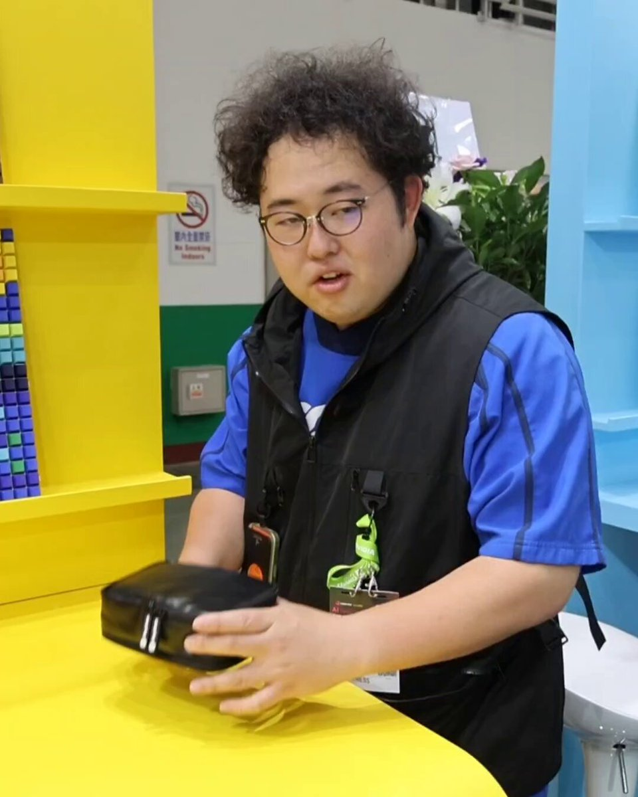
大好きなホストの為に仕事で客のウ〇コを食べて４０万円稼いだ夜職女性さん 念願のシャンパンタワーをやった結果
大好きなホストの為に仕事で客のウ〇コを食べて４０万円稼いだ夜職女性さん 念願のシャンパンタワーをやった結果 : ハムスター速報
トヨタ基金、沖縄のレンタカーに寄り道を提案する機能 渋滞解消狙う
トヨタ基金、沖縄のレンタカーに寄り道を提案する機能 渋滞解消狙う
西川アニキのお写真の後ろにちょろっといるおじさん見たことある人な気がする。バンナムのえらいおじさんかな？
デッキシミュのカードプールにBP08を追加しました
関宮
@sekimiya
アーセナルベースデッキシミュレータのデバックが終了したのでβ版として公開します。
利用の場合は下記URLを熟読の上利用ください。添付画像のような感じで使えます。スキル発動タイミングと効果からの検索、SQEBのゲージ上昇量からの検索などをサポートしてます
#アーセナルベース
トランプ氏、レバノン攻撃の停止を仲介 イラン対話継続へ地ならし
トランプ米大統領は1日、イスラエルのネタニヤフ首相と電話協議した。レバノンの首都ベイルートに向かっていたイスラエル部隊を帰還させ、攻撃停止を仲介したと主張した。イランとの協議は「速いペースで続いている」とSNSに投稿した。イスラエル軍がレバノンの親イラン組織ヒズボラへの攻撃をやめないことにイラン側は反発を強めている。イランのアラグチ外相は1日、米国とイスラエルが「停戦違反のいかなる結果について
nikkei.com
Anthropicも上場準備に入ったということで、今年中にOpenAI、Anthropic、SpaceXの時価総額100兆円超え企業の３社同時上場がほぼ確定しましたが、１社だけでも歴史的なものが３社同時ということで、市場からものすごい勢いで資金を吸い上げるブラックホールと化すのでは。
＼6月4日(木)14:59まで開催／
ドリームフェスティバルガチャ
本ガチャに登場中のドリフェス限定メンバー、
★5 #広町七深 の3Dライブ衣装はこちら
#バンドリ #ガルパ
「Sky」のアートブック第2弾「Gratitude to Nesting (2019-2024)」，今夏に発売。thatskyshopで予約受付もスタート
https://
4gamer.net/s/G039457.2606
02007
…
シンガーソングライター・AURORAさんとのコラボや，「星の王子さま」に着想を得たシーズンイベントなどの制作過程に迫る
＞ω＜さんがリポスト
Copilot+ PC と同じ運命を辿る、んんだろうなあ
Kazuki Kasahara
@KazukiKasahara
大事なことはこれは単にWoAに対応しただけでなく、エージェント型AIがWindowsにもたらされるってことです…
単なるSnapdragon対抗ではない、「RTX Spark」が導くWindowsの新時代 - PC Watch
https://
pc.watch.impress.co.jp/docs/news/even
t/2113566.html
…
何故百合作品にも関わらず男性器のメタファーをグッズに添えるのか？
ここからわかることは一つだ。百合の間に男を挟むなというのは、自分の代理人としての男性キャラすら許せなくなったオタクが直接視聴者として陰茎を突き立てるための言葉に過ぎない。
Haruhiko Okumuraさんがリポスト
遅ればせながら先日の読売新聞の「小学校低学年では紙の教科書を望む声が９割」という報道について。
5/27の読売新聞に校長アンケートの全容が載っているので、是非元データを見てみてください。
元データを見てみると、かなり控えめに言っても、上記のタイトルに語弊があることがわかります。
人類滅亡後も労働からは逃げられない！魔物企業で生存権を得るホラーADV『HR: Human Remains』プレイレポート【BitSummit PUNCH】
https://
gamespark.jp/article/2026/0
6/02/167257.html?utm_source=twitter&utm_medium=social&utm_content=tweet
…
温泉旅行中、車から道路標識を見上げると…… “異変”すぎる光景に「引き返します」「生きて帰られへんやつ」（1/3） | ライフスタイル ねとらぼ
異変すぎる標識
温泉旅行中、車から道路標識を見上げると…… “異変”すぎる光景に「引き返します」「生きて帰られへんやつ」
（記事URLはリプから）
＼6月4日(木)14:59まで／
ドリームフェスティバルガチャ開催中
★5 #広町七深 をご紹介
「ずっと……会いたかったよ……」
特訓後ライブ衣装は幻想的で非現実的な美しさを、白系でふわっとした軽さのある衣装で表現したデザインとなっております
#バンドリ #ガルパ
『タイタンフォール』感じさせるメカ搭乗×パルクール6vs6ハイスピードシューター『EMPULSE』トレイラー公開―ゲームプレイの詳細も
https://
gamespark.jp/article/2026/0
6/02/167256.html?utm_source=twitter&utm_medium=social&utm_content=tweet
…
https://
x.com/i/status/20615
08072992887113/video/1
…

ライブ直前に餅食べてる人です
女性向け転職サイトで3万8000件の不正ログイン 「女の転職type」にリスト型攻撃
女性向け転職サイトで3万8000件の不正ログイン 「女の転職type」にリスト型攻撃
たまに、シャッターを切るまでとシャッター切ってからの画が別物・・って聞くけれどこれが原因なんだと思う
TVアニメ『負けヒロインが多すぎる！』公式さんがリポスト
【商品案内】
TVアニメ『#負けヒロインが多すぎる！』の商品が
BASEにて好評発売中
定番の缶バッジや持ち歩きやすいフォトカード、
大きめサイズの場面写アクリルスタンドなど
詳しくはこちら
BASE：
https://
x.gd/o2RNWd
#マケイン
テスラさんがリポスト
インレタですね。グインサーガの「GUIN SAGA」ロゴは、わたしがインレタの中からこの書体を選び、かつ貼ってつくりました。
Unamuno
@UnamunoAgain
グラフィックデザイン界で最も古参の者たちだけがこれを覚えているだろう
インターネットを見ずに、画像のあれが何かわかるか？
【動画】イギリスのメディア、日本人がメダルやトロフィーを受け取ろうとする直前でカメラを切り替えてしまう… #酷い話・事件
【動画】イギリスのメディア、日本人がメダルやトロフィーを受け取ろうとする直前でカメラを切り替えてしまう… - オレ的ゲーム速報@刃の記事ページ
jin115.com
『FF7 リメイク』3作目そろそろ続報ある？6月はゲーム番組満載―『P4R』『エスコン8』などイベントでの発表に期待したいタイトルは
https://
gamespark.jp/article/2026/0
6/02/167252.html
…
フロム・ソフトウェアやカプコンタイトルの発表は？『GTA6』はないかも？
結局、前泊/後泊して試験に臨むことになりました。せっかくくんだりから都内に出るので、リコリコの取材(錦木千束の名前の由来になった秋田県の地)へ赴いて同時に湯治することにしました。
軍手
@gunziotaku
とある国家試験日に台風直撃なんだけど、問い合わせたら試験は会場が水浸しにでもならない限り実施しますと言われてしまい、どうしようか…と
マイクロフォーサーズの欠点と言えば、
何時もつけているレンズの開放値でプレビューしている所かな？
シャッター切ってからシャープに写っていて「あれ、絞ってたわ」みたいになる所かな
1枚目2枚目：絞っていても絞りは閉じていない
シャッターを切っている時だけ絞り込むので（3枚目）
糖尿病治療薬「マンジャロ」を無許可販売・保管疑い 男女3人書類送検
https://
nikkei.com/article/DGXZQO
UF021KX0S6A600C2000000/?n_cid=SNSTW005&n_tw=1780366974
…
ダイエット目的での使用は承認されていませんが、SNS上では「やせ薬」として広まっています。
糖尿病治療薬「マンジャロ」を無許可販売・保管疑い 3人書類送検
AWS、他クラウドと500Mbpsまでの接続が無料に 「AWS Interconnect - multicloud」に無料枠が登場
AWS、他クラウドと500Mbpsまでの接続が無料に 「AWS Interconnect - multicloud」に無料枠が登場
ネットも攻略本もなかった時代
【このゲーム、探してます！】PCゲーム黎明期の攻略情報冊子『ゲーム・エイド（ゴーストハウス）のヒントお答え集』 攻略本の誕生以前にプレイヤーを支えた通販冊子
（記事URLはリプから）
PCゲーム黎明期の攻略情報冊子『ゲーム・エイド（ゴーストハウス）のヒントお答え集』＜連載：このゲーム、探してます！＞ | ゲーム ねとらぼ
Torishima / INTPさんがリポスト
台風6号のタイムスケジュール最新版が出ました

道の駅でドライフルーツ一袋600円円を買うのに、結構思い切りが必要で。おやつは300円まで感覚が今も抜けないですね。
ソニーとシャオミ、その対照的なスマートフォン戦略 炎上した「AIカメラアシスタント」の実際は？
ソニーとシャオミ、その対照的なスマートフォン戦略 炎上した「AIカメラアシスタント」の実際は？
絶対死ぬ
強すぎンゴ
6月はゲーム発表の季節！配信番組スケジュール&見どころまとめ―大作からインディーまで情報の洪水を見逃すな
https://
gamespark.jp/article/2026/0
6/02/167255.html?utm_source=twitter&utm_medium=social&utm_content=tweet
…
本日船橋ケイバハートビートライブ出演させていただきます
楽しみです！！
よろしくお願いしますー！！
船橋ケイバ
@funabashi_keiba
6/2(火)のハートビートライブは
前後篇で14:00頃からお届け！
ご視聴はコチラ
https://
youtube.com/live/NRWpyg8u-
kE?si=kPhJpS908-fpCvaP
…
前半パドック解説は14:00頃から
大枝桃果さん(進行)
長尾基弘さん（勝馬）
後半戦は16:15頃から
秋田奈津子さん(進行)
西園寺亜希さん(声優)
佐藤ゆきあきさん（競馬エイト）
輿水畏子さんがリポスト
村では幸せな歌が聞こえます
人材派遣大手5社に公取委が立ち入り 派遣料金引き上げでカルテルか
人材派遣大手5社に公取委が立ち入り 派遣料金引き上げでカルテルか
ポン☆潤々さんがリポスト
／
#アイマスMOIW2025ラジオ vol.5
6/2(火)22:00～ #アイマスch でプレミア公開
＼
"アイ"のキセキR@DIO vol.5 は
本日6/2(火)22:00から！
#アイマスMOIW2025ラジオ をつけて
たくさん感想を投稿してください
視聴はこちら！
https://
youtu.be/ZoOrGklvijc
【メンテナンス実施のお知らせ】
v10.1.2に伴うアップデート対応のため、下記の日程でメンテナンスを実施いたします。
6月9日(火)9:00頃〜12:00頃
※メンテナンス終了と同時に強制アップデートを実施予定です。詳細はお知らせをご確認ください。
#バンドリ #ガルパ
ペルソナ５ ザ・ロイヤル コラボ Part1 SS確定ガチャ開催中！
期間限定スタイルのクイーンと東城は提供割合がアップ！
10連目はSS1体が確定で出現！
有償クォーツ限定で2回まで引けます。
▼開催期間
5月22日11:00 〜 6月19日10:59
#ヘブバンペルソナ５ザロイヤルコラボ #ヘブバン
貝さんさんさんがリポスト
お祝いイラストˎˊ˗
『#映画大好きポンポさん』
公開5周年を記念してイラスト到着⟡.·
作画監督：矢吹智美
#ポンポさん5周年 リバイバル上映
〜6/4まで東名阪劇場にて実施中
https://
pompo-the-cinephile.com/5thAnniversary
.html
…
「他県の人にもおすすめしたいご当地VTuber」1位の夫婦VTuber
地道な営業活動、県知事に3度の直談判…… 群馬のご当地VTuber「Peaky Hikers」 やりたいこと全てを仕事に変えてきた“舞台裏”に迫る【あのVTuberに花束を】
（記事URLはリプから）
【独占インタビュー】地道な営業活動、県知事に3度の直談判…… 群馬のご当地VTuber「Peaky Hikers」 やりたいこと全てを仕事に変えてきた“舞台裏”に迫る ＜連載：あのVTuberに...
川崎銀柳街、天一→ 伍福軒→ 魁力屋とラーメンFCメタモルフォーゼを続ける店舗にて。 魁力屋は久しぶりに食べたけど京都ラーメンを名乗るだけあってか醤油が甘い。そりゃ京都の人、醤油のかけすぎに厳しいわけだ。糖分きになるよね。
独創的なゲーム世界はいかにして生み出されるのか？日本のイベントに姿を見せたDouble Fine Productionsインタビュー【BitSummit PUNCH】
https://
gamespark.jp/article/2026/0
6/02/167254.html?utm_source=twitter&utm_medium=social&utm_content=tweet
…
#PR
ポン☆潤々さんがリポスト
商品情報
6月12日(金)発売
#WSブラウ
ブースターパック『Fate/strange Fake』
に収録される
“バズディロット・コーデリオン”
“真アーチャー”
のカードを公開
明日の公開もお楽しみに
商品詳細はコチラ
https://
ws-blau.com/item/fsf_01b/
#strangefake #ストレンジフェイク
【『CHUNITHM』ユーザーアンケート実施中！】
いつもチュウニズムをお楽しみいただき、ありがとうございます。より良い製品開発のため、ユーザーの皆さまの声をぜひお聞かせください。
チュウニズムチーム一同、ご回答を心よりお待ちしております！
アンケートはコチラ
https://
forms.office.com/r/sPXQTgyKbZ
【v10.1.2アップデートについて】
6月9日(火)にアップデートを実施予定です。
・利用者資産の保全方法の変更対応
※メンテナンス終了と同時に強制アップデートを実施予定です。詳細はお知らせをご確認ください。
#バンドリ #ガルパ
☆┈┈┈┈┈┈┈┈┈☆
コンテスト
シーズン４６ 開催！
☆┈┈┈┈┈┈┈┈┈☆
コンテストのシーズン４６を開催いたしました
開催期間
6/18 (木) 4:59まで(予定)
#学マス
アンケートにご協力いただいたユーザーの皆様！
ありがとうございました！
「とつラバメタライズアート」の販売時期などは
決定次第改めて告知いたします。
お楽しみに！
#とつラバ
ヘブンバーンズレッド公式さんがリポスト
舞台『ヘブンバーンズレッド』
Blu-ray発売まであと7日
#國見タマ 役の #早川渚紗 さんの
お写真でカウントダウン
Blu-rayご予約受付中▼
https://
officeendless.com/sp/hbr_stage/b
lu-ray/
…
#舞台ヘブバン #ヘブバン
演劇リーグ開催
第150回演劇リーグ開催中です
今回の楽曲は、
「悠久月華」になります
開催期間は6/7(日)24時までになります
#ユメステ #ワーダイ #ワールドダイスター
「プロジェクトセカイ」の日常を描いた
4コママンガを公開
363話「過保護者」
#プロセカ #セカイの4コマ
日経平均午前1100円安、「置いてけぼり銘柄」続出 建設株に売り圧力
日経平均午前1100円安、「置いてけぼり銘柄」続出 建設株に売り圧力
締め切りは本日です！
片山さつき財務相、足元の為替変動「いつでも適切に対応」
片山さつき財務相、足元の為替変動「いつでも適切に対応」
ポン☆潤々さんがリポスト
“Shibuya LOVEZ”オープニングセレモニー出席してきました！
http://
shibuyalovez.jp #パックマン
#TMRevolution #西川貴教
日本郵便、「熱中症特別警戒アラート」で配達休止に 6月から──サングラス着用や小まめな休憩も
日本郵便、「熱中症特別警戒アラート」で配達休止に 6月から──サングラス着用や小まめな休憩も
中国の人が異世界転生を見ると、「チート能力を得たのに、天下を競わずスローライフとはなにごとか！？」と感じるらしい… みたいな話を聞いて、本当かわからないけど面白い差異
名作「428」にインスパイアされた群像劇ノベルゲーム「三位一体の単一点」発表。AI時代の人類の在り方を描く近未来SFミステリー
https://
4gamer.net/s/G101155.2606
02006
…
3人の主人公を切り替えながら物語を進める群像劇形式を採用
貝さんさんさんがリポスト
いぶき
鉱石ラジオから手作りしているオタクに、何でローカルLLMを？などと聞かないでくれ。
というのはさておき、漏れては困る内容のOCRや翻訳、英語のブラッシュアップ、要約、簡単なコーディングや数学に、十分役立っている。
例: cos(sin(x) + x) を0から2πまで積分してください。
INPEXの豪州ガス施設でストライキ決行 賃上げ交渉停滞で
INPEXの豪州ガス施設でストライキ決行 賃上げ交渉停滞で
「Nintendo Music」がPCウェブブラウザやApple CarPlayなどに対応！『マリオカート ワールド』の楽曲も配信開始
https://
gamespark.jp/article/2026/0
6/02/167253.html?utm_source=twitter&utm_medium=social&utm_content=tweet
…
鋼鉄よりも硬い木材、開発されました。
鋼鉄よりも硬い木材、開発されました。 | ギズモード・ジャパン
魔法少女を神に捧げる儀式から生き残る。サスペンスノベル「魔法少女ノ因習村」，Steamストアページを公開
https://
4gamer.net/s/G093859.2606
02003
…
「神孕花」のために選ばれた魔法少女たちは，毎晩行われる儀式で生き残ることを目指す。ストアページ公開に合わせて，スクリーンショットも公開されている
ちなみにufoの國弘氏とか設立初期組あたりは元々この傾向の動かし方する印象があるので（今でもアクションシーンでコマ的にこの系統に近い雰囲気は割と残ってる）、再びコメディ系統の作品も見たい。
貝さんさん
@morikai3
主体のアクションは牧野竜一氏が主体？メリハリ効いたポーズ・靡きの動き、Web的な動きが多くなった最近だと逆に珍しくなってきた印象もある（00～10年前半頃までのアニメではむしろ見る機会多かった印象）。映像面でも楽しい瞬間が多い作品だ（コメディこそ決めるところで動かしまくってほしい派）。
ポン☆潤々さんがリポスト
◤ヴァイスシュヴァルツ 今日のカード◢
6月26日(金)発売
ブースターパック グランブルーファンタジー
ノーマルカードを公開！
商品情報はこちら！
https://
ws-tcg.com/products/gbf_b
p/
…
#グラブル #WS
ポン☆潤々さんがリポスト
◤#ヴァイスシュヴァルツ今日のカード◢
6月26日(金)発売
ブースターパック グランブルーファンタジー
パラレルカードを公開！
商品情報はこちら！
https://
ws-tcg.com/products/gbf_b
p/
…
#グラブル #WS
これめっちゃ良さそう
逃がした魚は大きかったが釣りあげた魚が大きすぎた件 第9話
～9話まで視聴。1話からの色々な諸問題がここまでの話で一応の収束を迎える形に。最初は熱血系的なコメディ作品になるかなと思いきや、割と決めるところはしっかり決めてくる作品だ。
逃がした魚は大きかったが釣りあげた魚が大きすぎた件 第9話「逃がした魚は恋のキューピッド」
主体のアクションは牧野竜一氏が主体？メリハリ効いたポーズ・靡きの動き、Web的な動きが多くなった最近だと逆に珍しくなってきた印象もある（00～10年前半頃までのアニメではむしろ見る機会多かった印象）。映像面でも楽しい瞬間が多い作品だ（コメディこそ決めるところで動かしまくってほしい派）。
論理的ではないけど論理的ではありたいと思っているので、ちゃんと「これはもうお気持ちの話なのですが」って宣言してから意味不明なお気持ちの話を始めてる
日経平均株価で見る以上に色んな銘柄下がってるぞ
まぁ、今のうちに買ってみますかね
コズミック・ホラー戦略的カードRPG「忘却前夜」，「沙耶の唄」コラボPVのグローバル累計再生回数500万回を突破。特別アイコンや薔薇金券500万枚，根源の澱500個を配布
https://
4gamer.net/s/G091979.2606
02005
…
新しくゲームを始める人に向け，世界観やゲームシステムを紹介する動画も公開中だ
キオクシアとかキーエンスに引っ張られすぎでは？→日経平均株価
もはや機能してない
Masanori Kusunoki / 楠 正憲さんがリポスト
【注目の記事】
米名門大の秀才を襲う就職難 8000社玉砕、コンピューター専攻で悲劇
https://
s.nikkei.com/4dXWrW7
米国で大卒の失業率が上昇し、AIに自分たちの仕事が奪われているとの不満が若者の間で高まっています。
この記事のThink!に楠正憲さん(
@masanork
)が投稿。冒頭を紹介
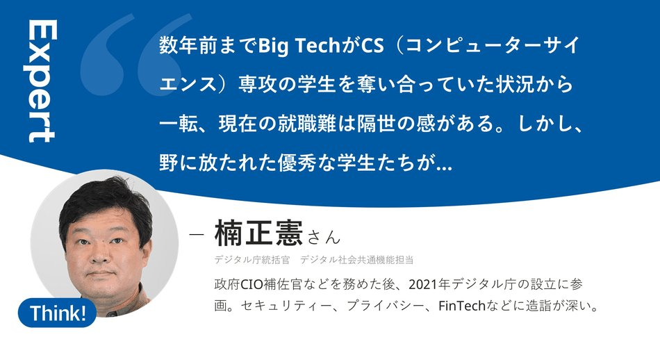
でも概ねのプロットは正しくて、そのプロットは面白かったからやっぱり残ってきた古典って強いんやなという気持ちになりました（そこまでは古くないかもですが）
【メルカリ】嵐ラストLIVEで空前の嵐バブルが始まる ライブ会場の空気や櫻井翔のあごひげや金銀テープが売れまくる
【メルカリ】嵐ラストLIVEで空前の嵐バブルが始まる ライブ会場の空気や櫻井翔のあごひげや金銀テープが売れまくる : ハムスター速報
5000円を超える高値も
「ほんとに怒りを覚える」 嵐・“銀テープ”転売対策もフリマサービスに出品多数「誰も買わないで」「絶対に許せない」
▼記事を読む▼
https://
nlab.itmedia.co.jp/cont/articles/
3863884/
…
ITmedia NEWSさんがリポスト
Anthropicが上場準備 直近の評価額は約154兆円
Anthropicが上場準備 直近の評価額は約154兆円
メルカリ、AIと人事の責任者を1人に統合 「組織ごとAI前提に」
CTOの木村俊也氏がCHROとCAIOを兼任。人と組織の運営基盤をAI前提で再設計する。
itmedia.co.jp
気になる。詳しく聞いてみたい
木村弘毅 MIXI社長
@kokikimura
【ポジショントークするぜ！】
まぁ、聞いてくれ。割と本気の話なんだ。
MIXIはアプリケーションプレイヤーのポジションを取ってるから、「次はアプリケーションレイヤーが来る」というポジショントークをするのだ。
リジスさんがリポスト
四国が梅雨入り 平年より3日早く 気象庁が発表
https://
news.web.nhk/newsweb/na/na-
k10015137921000
… #nhk_news
四国が梅雨入り 平年より3日早く 気象庁が発表 | NHKニュース
糖尿病治療薬「マンジャロ」を無許可販売・保管疑い 3人書類送検
糖尿病治療薬「マンジャロ」を無許可販売・保管疑い 3人書類送検
テスラさんがリポスト
おはよーございます、さいとーです
今日は曇り空
南の方はこれから台風強くなるそうなのでお気をつけ下さいね
今日は少し早めの16時にクローズとなりますので、ご了承下さい
シグルイの原作小説読んだんですが、シグルイの肉付けがデカすぎて笑いました
リジスさんがリポスト
【速報】四国～本州結ぶ ＪＲ瀬戸大橋線の海上部 きょう・２日午後７時ごろから計画運休へ 詳しくはこちら→
https://
ohk.co.jp/data/26-202606
02-00000005/pages/
…
外国人のマンション所得、規制を当面見送りへ… #雑談・その他の話
外国人のマンション所得、規制を当面見送りへ… - オレ的ゲーム速報@刃の記事ページ
jin115.com
おはようございます。
今日から台湾のコンピューター展示会、COMPUTEXの取材です。
今の取材にはAIガジェットが欠かせないですね。身の回りだけでも、これだけありました。
#COMPUTEX2026
#AIガジェット
夏が始まるよ。GIZMARTのサマーフェスで一足早く常夏気分を味わおう
夏が始まるよ。GIZMARTのサマーフェスで一足早く常夏気分を味わおう | ギズモード・ジャパン
Keychron Orca echoプロトタイプ展示予定のイベント↓
6月2日（火）〜5日（金）
台湾「COMPUTEX TAIPEI 2026」
6月6日（土）
六本木「天下一キーボードわいわい会 vol.11」※満席
6月19日（金）
渋谷「ギズマートサマーフェア」こちらはまだ申し込み可能なイベントです↓↓
ギズモード・ジャパン（公式）
@gizmodojapan
【Keychron × GIZMART】
Keychron Orca echoを発表しました。台北で開催中のCOMPUTEXでプロトタイプが展示されます。
・完全無線左右分割キーボード
・右手に19mmトラックボール
・左手にホイール
・左右に上下スクロールパッド
・2段階テンティングスタンド内蔵
・底面マグネットで左右が合体
インドネシア、石炭などの輸出管理導入 拙速な政策に日系企業も混乱
インドネシア、石炭などの輸出管理導入 拙速な政策に日系企業も混乱
西連寺亜希(さいれんじあき)さんがリポスト
6/2(火)のハートビートライブは
前後篇で14:00頃からお届け！
ご視聴はコチラ
https://
youtube.com/live/NRWpyg8u-
kE?si=kPhJpS908-fpCvaP
…
前半パドック解説は14:00頃から
大枝桃果さん(進行)
長尾基弘さん（勝馬）
後半戦は16:15頃から
秋田奈津子さん(進行)
西園寺亜希さん(声優)
佐藤ゆきあきさん（競馬エイト）
新Galaxy Watchは3種類、Pixel Watchの「あの機能」が使えるようになる？
新Galaxy Watchは3種類、Pixel Watchの「あの機能」が使えるようになる？ | ギズモード・ジャパン
先月忙しくて全然見れていなかった分、ここ数日で最新話手前までは追いついた作品がいくつかあるので、今日の予定も入ってない休みを利用して追いつきたい。
この時計、針の動きがバグってる。惑星軌道を描く超変則ギミック #BuyPR
この時計、針の動きがバグってる。惑星軌道を描く超変則ギミック | ギズモード・ジャパン
夢のタッグはまだ続く。Keychron×ギズモードの新作は「トラックボール付き分割キーボード」だ！ #BuyPR
夢のタッグはまだ続く。Keychron×ギズモードの新作は「トラックボール付き分割キーボード」だ！ | ギズモード・ジャパン
夏が始まるよ。GIZMARTのサマーフェスで一足早く常夏気分を味わおう
夏が始まるよ。GIZMARTのサマーフェスで一足早く常夏気分を味わおう | ギズモード・ジャパン
深夜のSNSパトロールを強制終了！誘惑だけを消し去るカード「Bloom」 #BuyPR
深夜のSNSパトロールを強制終了！誘惑だけを消し去るカード「Bloom」 | ギズモード・ジャパン
AVITAMINOSEさんがリポスト
台風6号
9時の実況で暴風域が消滅
強い勢力になるという予想は幻に終わった
※ 出典 気象庁
台風専門ちゃんねる
@STY1330
台風6号
気象庁の現在の実況では強い勢力ではないが、沖縄本島付近から紀伊半島沖の予報円を赤枠で囲ったエリアで強い勢力になるとしている
しかし沖縄本島付近より北の予想進路上の海水温は一部黒潮の影響による暖水域はあるものの基本的に26℃未満で純粋な台風が発達出来る水温ではなくなっている
ITmedia NEWSさんがリポスト
Claudeのレート制限を“詫びリセット”、ProとMaxプラン向け 一部で「想定より速く使用量消費」
Claudeのレート制限を“詫びリセット”、ProとMaxプラン向け 一部で「想定より速く使用量消費」
オタクに優しいギャルはいない!? 8時間目
7～8話視聴。夏休みも終わり席替え＆学校祭の時期に。学校、そしてお泊り。いつもと変わらぬ3人の関係。だけど、夏祭りの日から確実に変化しつつある感情。コメディパート含めこのテンポ間、好き。
オタクに優しいギャルはいない!? 8時間目『お泊り会なんてそんなぁ』
個人的には重いのより楽しいラブコメが好きなので本作は笑いながら観れて良い。あと、クレジットが結構安定している作品でもあるなと。このまま最終話まで駆け抜けてほしい。
食品包装フィルム2割高、ナフサ高騰が波及 食品価格になお上昇圧力
食品包装フィルム2割高、ナフサ高騰が波及 食品価格になお上昇圧力
佐々木俊尚＠新著「フラット登山 日本を歩く旅60」7月8日刊行！さんがリポスト
おはようございますブランチは、地味な日本の朝ごはん！って感じ。春菊のお味噌汁。我が家はいつも具がひとつが好き。イカニンジン。ちくわにきゅうり。カブのお漬物。 #名もなき料理
2026年上期ヒット番付、横綱は「ホルムズ･ショック｣｢ポケモン30周年」
2026年上期ヒット番付、横綱は「ホルムズ･ショック｣｢ポケモン30周年」
【牛丼の松屋が松屋銀座に】
「松屋PREMIUM」1号店が出店へ
https://
nikkei.com/article/DGXZQO
UC0158D0R00C26A6000000/?n_cid=SNSTW005&n_tw=1780308620
…
松屋銀座の弁当・総菜売り場に6月10日開店。
「国産黒毛和牛のうまトマハンバーグ」(1681円)や「神戸牛牛めし」(1390円)など、百貨店ならではの高級感のある限定商品を販売します。
松屋銀座、松屋フーズの新業態「松屋PREMIUM」1号店が出店へ
AVITAMINOSEさんがリポスト
3日午前中、関東付近に－272というとてつもない上昇気流が計算されている（ざっくり言うと－100以下だとシビアな現象に要警戒）。
このタイミングで、赤道気団（非常に高温多湿、相当温位345K以上）が関東に舌状に入り込んでくる。
「CRIME BOSS: ROCKAY CITY」，新ストーリーモードを体験できるSteamプレイテストを6月5日に開始。参加登録の受付をスタート
https://
4gamer.net/s/G067412.2606
02001
…
6月後半に予定されている正式アップデートに先駆けて新モードをプレイ可能
「鳴潮」2周年記念イベントをレポート。会場を幕張メッセに変え，アトラクションや展示物がパワーアップ。公式コスプレイヤーやきぐるみたちも大勢登場
https://
4gamer.net/s/G063420.2606
01035
…
「鳴潮」 2nd Anniversary Fes. 〜君と巡る星々の瞬き〜は，2026年5月30日と31日に千葉の幕張メッセで開催された。
ポン☆潤々さんがリポスト
◇◆◇◆
◆予告◇
◇◆◇◆
6/3(水)から【SUSHIRO Cafe】にお抹茶の季節がやってくる
おすしの後の本格お抹茶スイーツ召し上がれ
どっちも食べた～～い
日本経済新聞 電子版（日経電子版）さんがリポスト
那覇市、外来種のザリガニ駆除 池の水全部抜きセメントで封じ込め
那覇市、外来種のザリガニ駆除 池の水全部抜きセメントで封じ込め
ソフトバンクGの株価が連日高値 NVIDIAの恩恵で傘下のアーム株急伸
ソフトバンクGの株価が連日高値 NVIDIAの恩恵で傘下のアーム株急伸
AIのわけわかんない謎の言葉すこ
塩・醤油←わかる
豚←豚骨が抜け落ちたんやろな、わかる
謎の言葉←なんのハルシネーションで出てきたのか
日経平均株価、下げ幅一時1000円超 原油高で利益確定売り先行
日経平均株価が反落、下げ幅一時1000円超 原油高で利益確定売り先行
PCでも任天堂の楽曲を楽しめる。「Nintendo Music」ブラウザ版の提供を開始。「マリオカート ワールド」の楽曲も追加に
https://
4gamer.net/s/G101152.2606
02002
…
Android AutoとApple CarPlayにも対応し，運転中も楽しめる
同接約16万人の放置RPG『タスクバーヒーロー』チーターへの対処に向け、アイテムリセットと取引に関わるアプデ実施―主要機能が復活、ドロップ率の問題も復旧依頼中
https://
gamespark.jp/article/2026/0
6/02/167251.html?utm_source=twitter&utm_medium=social&utm_content=tweet
…
ギズモード・ジャパン（公式）さんがリポスト
やっば、これはかなり良さそうだぞ、、Keychronだし。Keychronの分割キーボードから入った人間だから、かなり気になる。
キーの感じはかなりCornixに似てる。もしかしたら意識しているのかも。テンティング機能もあるし。
ギズモード・ジャパン（公式）
@gizmodojapan
【Keychron × GIZMART】
Keychron Orca echoを発表しました。台北で開催中のCOMPUTEXでプロトタイプが展示されます。
・完全無線左右分割キーボード
・右手に19mmトラックボール
・左手にホイール
・左右に上下スクロールパッド
・2段階テンティングスタンド内蔵
・底面マグネットで左右が合体
ギズモード・ジャパン（公式）さんがリポスト
使ってみたい〜。そして、分解してなか見てみたいw
ギズモード・ジャパン（公式）
@gizmodojapan
【Keychron × GIZMART】
Keychron Orca echoを発表しました。台北で開催中のCOMPUTEXでプロトタイプが展示されます。
・完全無線左右分割キーボード
・右手に19mmトラックボール
・左手にホイール
・左右に上下スクロールパッド
・2段階テンティングスタンド内蔵
・底面マグネットで左右が合体
Torishima / INTPさんがリポスト
こういう議論が面白いのは、
自分が何を好きかをちゃんと理解している人の8割はクリエイターになって、AIツールをうまく使えるんです。
何を好きかもわからない人はそれができないんです。
Torishima / INTP
@izutorishima
サムが当時の最新技術で作った Sora2 はまさに『「音MAD作って」「良い感じの環境映像・環境音楽を作って」』を誰でも簡単に自家消費できる社会実装としての問いかけだったわけだが、定着せずサ終して失敗した時点で、少なくとも AI コンテンツ生成は「Push 型」でないと普及しないと思ってる x.com/cat_thankyou/s…
ギズモード・ジャパン（公式）さんがリポスト
これは素晴らしい過ぎるかもしれない！
値段あんまり高くありませんように！ww
重さはどれくらいやろね？
ギズモード・ジャパン（公式）
@gizmodojapan
【Keychron × GIZMART】
Keychron Orca echoを発表しました。台北で開催中のCOMPUTEXでプロトタイプが展示されます。
・完全無線左右分割キーボード
・右手に19mmトラックボール
・左手にホイール
・左右に上下スクロールパッド
・2段階テンティングスタンド内蔵
・底面マグネットで左右が合体
なるせひろのりさんがリポスト
GIGABYTEが魅せた「AIと無限の可能性」。40周年記念モデル『ENTER INFINITY』大注目製品まとめ
GIGABYTEが魅せた「AIと無限の可能性」。40周年記念モデル『ENTER INFINITY』大注目製品まとめ (1/5)
伊藤園の株価一時12％安 27年4月期営業利益8％減、失望売り膨らむ
伊藤園の株価一時12%安 27年4月期営業利益8%減、失望売り膨らむ
AVITAMINOSEさんがリポスト
気象庁の出している暴風域に入る確率、将棋の形勢のような激しい動きをしている。
ギズモード・ジャパン（公式）さんがリポスト
うおお！これはいいね！！
めっちゃほしい！
ギズモード・ジャパン（公式）
@gizmodojapan
【Keychron × GIZMART】
Keychron Orca echoを発表しました。台北で開催中のCOMPUTEXでプロトタイプが展示されます。
・完全無線左右分割キーボード
・右手に19mmトラックボール
・左手にホイール
・左右に上下スクロールパッド
・2段階テンティングスタンド内蔵
・底面マグネットで左右が合体
記事↓
夢のタッグはまだ続く。Keychron×ギズモードの新作は「トラックボール付き分割キーボード」だ！
夢のタッグはまだ続く。Keychron×ギズモードの新作は「トラックボール付き分割キーボード」だ！ | ギズモード・ジャパン
ギズモード・ジャパン（公式）さんがリポスト
これは、さいつよですわ。
ギズモード・ジャパン（公式）
@gizmodojapan
【Keychron × GIZMART】
Keychron Orca echoを発表しました。台北で開催中のCOMPUTEXでプロトタイプが展示されます。
・完全無線左右分割キーボード
・右手に19mmトラックボール
・左手にホイール
・左右に上下スクロールパッド
・2段階テンティングスタンド内蔵
・底面マグネットで左右が合体
ギズモード・ジャパン（公式）さんがリポスト
全貌出ましたー！
ギズモード・ジャパン（公式）
@gizmodojapan
【Keychron × GIZMART】
Keychron Orca echoを発表しました。台北で開催中のCOMPUTEXでプロトタイプが展示されます。
・完全無線左右分割キーボード
・右手に19mmトラックボール
・左手にホイール
・左右に上下スクロールパッド
・2段階テンティングスタンド内蔵
・底面マグネットで左右が合体
Torishima / INTPさんがリポスト
ギュられる側から見たときに、自分もそのAIを便利に使える場合は「対応するしかねえか…」になるけど（SE等）、全くメリットがない場合「AIを規制しろ」になる（絵師等）。
その間に「場合によっては仕事効率化や収入に繋がるので無視できない」ケースがグラデーションする（アニメーター、漫画家等）
上伊那ぼたんに出てくる酒を集めた飲み会があるので、ビールを持っていこうとネットを探したけど、かなり売り切れてる。ぼたん効果、ありそう……！
無職と社長なら、だれでもいつでもなれますものね。
関宮さんがリポスト
【Keychron × GIZMART】
Keychron Orca echoを発表しました。台北で開催中のCOMPUTEXでプロトタイプが展示されます。
・完全無線左右分割キーボード
・右手に19mmトラックボール
・左手にホイール
・左右に上下スクロールパッド
・2段階テンティングスタンド内蔵
・底面マグネットで左右が合体
【1,900円→0円】『ロックマン』から影響、ウイルス感染したロボ軍団倒す“圧倒的に好評”2DハイスピードACTがSteamにて無料配布！続編も発表
https://
gamespark.jp/article/2026/0
6/02/167250.html?utm_source=twitter&utm_medium=social&utm_content=tweet
…

【ヤバイ】6月病にかかりやすい人が判明…5月病よりも重症化しやすい場合もあるのでマジで注意！ #雑談・その他の話
【ヤバイ】6月病にかかりやすい人が判明…5月病よりも重症化しやすい場合もあるのでマジで注意！ - オレ的ゲーム速報@刃の記事ページ
jin115.com
今期ゆったり観れる作品の一つ。豆知識も面白いし、何より美味しそうに食べるスズメの姿が良き。広がっていく人と人とのつながりも。個人的に登場人物たちの笑う瞬間の描き方が非常に好きな作品でもある。次回も楽しみ。
メイドさんは食べるだけ 10食目
7話～先行10話まで視聴。橘スズメの日常は秋色づく季節へ移ろう中で少しずつ積み重なり変化していく。人と食べ物を通じて何かを見つけていくちょっとした一幕。
スズメは公園で、ボーロを一緒に食べた女の子が、可愛らしい着物姿なのを見かける。今日は七五三。スズ...
nicovideo.jp
なるせひろのりさんがリポスト
初のSnapdragon搭載ミニPC、ASUSとQualcommが共同開発
https://
pc.watch.impress.co.jp/docs/news/even
t/2113545.html
… #Snapdragon #ミニPC
Torishima / INTPさんがリポスト
思ってたより凄かった、、、なんやこれ
ひっく！
@hikkie_consider
皆さん、冷静に立ち止まって再考してみてください。あなたが回答したそのアニメ1話は、本当に「こめかみっ！Girls」1話よりもつまらないですか？このラインを基準にお考え下さい。
https://
animestore.docomo.ne.jp/animestore/ci_
pc?workId=28743
…
AVITAMINOSEさんがリポスト
いま日本で一番暑い小清水町が31℃の一方、標津町は10.4℃（10:00時点）
札幌暮らし（北海道グルメと札幌イベント）
@sapporolife2021
今日の最高気温ランキングは北海道と沖縄の一騎打ち
朝8時台から小清水町が30℃到達で北海道がリード
Torishima / INTPさんがリポスト
「実際に悪用できる脆弱性の発見能力は低いのに、実際に発生するバグ取り・バグ回避能力は高い」ってそもそもあり得ないので、そりゃそういうチューニングに失敗するのはあまりにも当然のことでしょうね。
EV電池、日立やリコーがブロック型工場 コスト7割減で中国に対抗
EV電池、日立やリコーがブロック型工場 コスト7割減で中国に対抗
東砂町「不二の湯」、ワンちゃんいてかわいかった。たまに銭湯に看板犬とか猫いると嬉しいし、ヒマして脱衣所うろうろしてる犬や猫に常連さんが「おっ、見回りのお手伝いしてるの！えらいね！」とか声かけてるの聞くのも楽しい。
引用しているADXアップデート情報、文字だけだとピンと来にくいかもしれませんが、UI改修とかこちらの動画でなんとなく伝わるかと思います。
インゲームプレビューも少し使いやすくなりました。今まで別バイナリだったので運用はだいぶ楽になるかと。
https://
x.com/ringo_cri/stat
us/2056208159971426652
…
CRIWARE技術情報
@CRIWARE_Tech
- 共通
- インゲームプレビュー用バイナリの廃止
- Atom Craft UI改修
- サイドチェイン機能改修
- 3Dポジショニング再生関連機能追加
詳細はテクニカルサポートサイトをご確認ください。
https://
criware.jp/adx2
Torishima / INTPさんがリポスト
AIシンギュラリティでライフワークにダメージを喰らうことを、最近は「シンギュられる」というようだ。昔は「機械がオラたちから仕事を奪う」だったのに。
こないだは巨人の監督が変化球でギュられてましたが、社会から見ていいギュと悪いギュがありますよぬ
「N高がテレアポ営業」文春報道、かわんご氏が反論 「教育に数値管理は必要」 N高・ZEN大の「正直な数値」発表へ
「N高がテレアポ営業」文春報道、かわんご氏が反論 「教育に数値管理は必要」 N高・ZEN大の「正直な数値」発表へ
コードを書くllmとかコンテキストは200kトークン程度で、あとはなんとなく覚えてるができるような、長期記憶なりリキャップなりアテンションのアテンションなりで、コスト一桁下げてとか、出てきそうですのにね。
東宝の株価、一進一退 7月から映画料金を引き上げ
東宝の株価、一進一退 7月から映画料金を引き上げ
Udemyコースの収録前に、FAQをファッキューではなくエフエーキューと読むことに気づいたおかげで命拾いした。
#udemy
なるせひろのりさんがリポスト
／
『僕の心のヤバイやつ【最新話無料】』
最新話更新
＼
Karte.192 僕らは進路が決まらない
チャンピオンクロスで今すぐ読む▼
https://
championcross.jp/episodes/5d078
078154b2/
…
桜井のりお（
@lovely_pig328
）
僕の心のヤバイやつ 公式（
@boku__yaba
）
僕の心のヤバイやつ【最新話無料】・Karte.192 僕らは進路が決まらない
200ドル課金なのに3万円を超えるとは、これ如何に、なのです。ドル円にまだ、慣れません。
それなら、自分としてはArm版WindowsラップトップよりUbuntuデスクトップの方が使いやすいんだが、どうなんだろう
プロ散財家 どりきん
@drikin
注目なのがメモリ帯域幅が600GB/sもある点です。
これCPU-GPU間の帯域幅の話でGPUメモリーの帯域はDGX Sparkと全く同じ273 GB/sみたいですね。発表が紛らわしかったみたいで、勘違いしてる記事多発されそう。。。西川善司の記事が待ち遠しいです。
https://
gizmodo.jp/article/nvidia
_rtx_spark/?utm_source=twitter&utm_medium=feed
…
Claudeとcodexをそれぞれ月100ドル契約してみましたが、これは快適ですね。コードを書くお仕事をcodexに任せる。claudeと違い、ちゃんとやることをやる。レビューとマージはclaudeに。人への説明はわかりやすい。
ギズモード・ジャパン（公式）さんがリポスト
Keychron×GIZMART共同開発！左右分割キーボード「Keychron Orca echo」を、台湾・台北市で開催中の「COMPUTEX TAIPEI 2026」にて世界初公開します
また、6月19日よりGIZMARTで日本先行クラウドファンディングも開始します
https://
prtimes.jp/main/html/rd/p
/000000128.000144504.html
…
#Keychron #GIZMART #COMPUTEX2026
ギズモード・ジャパン（公式）さんがリポスト
Nape Pro届いたぁ〜〜
最初ランチャーから角度の調整書き込めなかったけど、ファームウェア更新したら直ったぜぇぇぇ
Nape Pro セットアップガイド↓
Nape Pro | SUPER KOPEK
人間は邪魔でち…
Nape Proが届いた方へ
・Keychron Lancherの言語設定を日本語に
・ファームウェアアップデートを実施
をお願いします。セットアップガイド↓
ギズモード・ジャパン（公式）
@gizmodojapan
【Nape Pro発送】
きのうNape Proの最初の国内発送を行ないました。早ければ今日お手元に届く方もいらっしゃいます。
また、中国から日本への出荷も第三便がまもなく到着予定です。またアップデートがあり次第ポストします！
誰もが作家になれる時代、誰もが作家になれるわけはないのですね。
そういえば富山の某所でたわわに実った畑見たなぁ
丁度5月の終わりだったし
旅する飛び出し
#旅する飛び出し坊や
https://
news.yahoo.co.jp/articles/73537
cba2b2f96d2863d896d2adf4019a5db8c44
…
美少女パリィACT×デッキ構築『Witch the Showdown』デモ版に攻撃特化キャラ「ネオン」参戦。早期アクセスは2026年後半に開始予定
https://
gamespark.jp/article/2026/0
6/02/167249.html?utm_source=twitter&utm_medium=social&utm_content=tweet
…
【解散】嵐・二宮和也さん、最後のライブで”あのワード”を連呼してしまう #芸能・スポーツ
【解散】嵐・二宮和也さん、最後のライブで”あのワード”を連呼してしまう - オレ的ゲーム速報@刃の記事ページ
jin115.com
【牛や馬もスキンケアで猛暑対策】
小泉製麻が化粧水、清涼成分でリラックス
https://
nikkei.com/article/DGXZQO
UF014AZ0R00C26A6000000/?n_cid=SNSTW005&n_tw=1780317510
…
牛や馬の体表に塗るボディーケア商品「どうぶつのボタニカル化粧水」を6月上旬に発売。
3.5リットル缶入りで、同社のサイトや通販「モノタロウ」で扱います。
「牛もボディーケアで猛暑対策」 小泉製麻が化粧水、清涼成分配合
炭火焼きするなら、デイキャンプでいいのでは？羽虫や蒸し暑さで夜中に目覚めることなく、ビジネスホテルなり、適当な車内泊なりすればいいのでは？
1人用リアルタイムアクションゲーム「Witch the Showdown」，早期アクセスを2026年後半にSteamで開始
https://
4gamer.net/s/G083821.2606
01045
…
6月15日にスタートする「Steam Next Fest」への参加も決定した
挽目：2624click
濃度はちょうどよくなったけど臭みと酸味が出た
微粉が増えたのと抜けが悪くなったせいかな
25クリックにするか…湯温上げるか…
今の豆あと1回分しかないんだよなぁ
それは卵？ いや，フットボールだよ。圧倒的好評の「Titanium Court」は，意味を解体するシニカルな世界を“メカニズム”で語る作品だった
https://
4gamer.net/s/G101148.2606
01028
…
満潮で地形を動かして干潮で戦う（？ ）ローグライトパズル。それはジャンルの成熟によって生み出された宝石のような一作だ
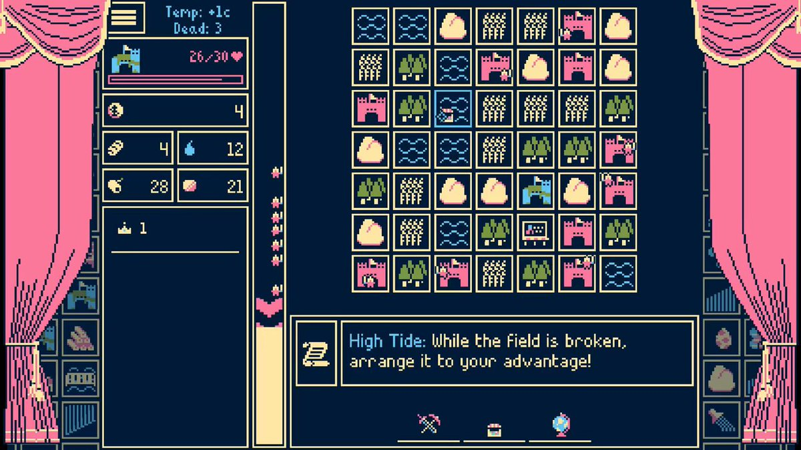
「週刊プロゲーマーファイル」File.335：Serata選手【Pokémon UNITE】
https://
4gamer.net/s/G051615.2605
29049
…
連載第335回では，DetonatioN Focus Meに所属するSerata選手を取り上げます
なるせひろのりさんがリポスト
【開発中止のお知らせとお詫び】
キャンプから帰宅してから、ガスの魚焼き器で余った豚串を焼いて食べてみましたが、炭火焼きの方がとても、美味しかった。肉に臭みがないというか。
Torishima / INTPさんがリポスト
少なくとも閉じた趣味を「企業がビジネスとして」行うのは結構無理筋なんですよね…
それこそ3Dプリンターの様に「資材で利益を出せる」レベルに原価コストが下がれば話は別なもののその段階APIに閉じ込めるのは(模倣されたローカルモデルなどが出ることも予想され)現実的ではない感じが
Torishima / INTPさんがリポスト
Claudeの良いところ第一位「人間なら絶対通じないような雑な日本語が通る。雑過ぎる日本語でもちゃんと意図を理解する」
これからAI同士の開発効率バトルになるので、「うちはこんな少ないトークンでこんだけ開発できます」とかの競争が始まるべさ
ギズモード・ジャパン（公式）さんがリポスト
キタァ！
ギズモード・ジャパン（公式）
@gizmodojapan
【Nape Pro発送】
きのうNape Proの最初の国内発送を行ないました。早ければ今日お手元に届く方もいらっしゃいます。
また、中国から日本への出荷も第三便がまもなく到着予定です。またアップデートがあり次第ポストします！
02日06時発出の「関東甲信地方気象解説情報（台風第6号）第6号」
https://
jma.go.jp/bosai/informat
ion/#area_type=offices&info_id=20260601211038_0_VPCJ51_010300&format=text&area_code=130000
…
東京地方では風は23mps(35mps)程度と確かに暴風域水準未満水準となりそうな一方、雨が3日朝まで100mm、追加で4日朝まで200mmと累積300mm級の雨が予想されている点が気になるところ。
Torishima / INTPさんがリポスト
トークンマネジメントなんぞ、来年から再来年のAIが勝手に解決する問題やろ。今年ぐらいしか賞味期限ないのでは？
おバイクの台風対策が流れて来るけれど・・
結ぶのが苦手ならタイダウンベルトとかを利用すべきかと・・（他にも使えるから持っておくと安心）
カバー掛けたまま中途半端に紐掛けしていると逆効果
台風6号、暴風・土砂災害・高波に厳重警戒 九州南部に接近
台風6号、暴風・土砂災害・高波に厳重警戒 九州南部に接近
「90年代Jポップ検定」を受けた結果、100点で合格でした。
皆さんは何点でしたか？
#検定メーカー #90年代Jポップ検定
90年代Jポップ検定
盗られた瞬間ロック！ iPhoneに強奪検知機能が追加か？
盗られた瞬間ロック！ iPhoneに強奪検知機能が追加か？ | ギズモード・ジャパン
Google擁するAlphabet、AI基盤増強に向け800億ドルの株式調達へ
Google擁するAlphabet、AI基盤増強に向け800億ドルの株式調達へ
日本経済新聞 電子版（日経電子版）さんがリポスト
キオクシア、時価総額一時40兆円超え 投資家向け説明会控え期待先行
キオクシア、時価総額一時40兆円超え 投資家向け説明会控え期待先行
気象庁の台風進路予想図の悪いところで、3日から4日のどこかで台風6号が風速25mps以上の暴風域がなくなる程度に衰退する、という意味で、3日6時を以て暴風域がなくなるという意味ではない。ただ、関東南部陸地の暴風域入り確率は劇的に低くなった。
https://
data.jma.go.jp/multi/cyclone/
cyclone_detail.html?id=60&lang=jp
…
https://
jma.go.jp/bosai/map.html
#6/30.751/137.01/&elem=prob&typhoon=TC2606&contents=typhoon
…
テスラさんがリポスト
【物議】石丸伸二さん、言ってしまう「僕は困らないですもん正直。東京がどうなろうと、日本がどうなろうと」 #炎上
【物議】石丸伸二さん、言ってしまう「僕は困らないですもん正直。東京がどうなろうと、日本がどうなろうと」 - オレ的ゲーム速報@刃の記事ページ
jin115.com
AVITAMINOSEさんがリポスト
予想降水量が関東でやや悪化しています
関東平野でも200mmを超えるような予想もあります。
米中両軍、ハワイで海上安保協議 「建設的戦略安定関係」の合意踏まえ
米中両軍、ハワイで海上安保協議 首脳の「建設的安定」合意踏まえ
Torishima / INTPさんがリポスト
"職業欄に「Founder（創業者）」と記載する人が1年で75%も増えた。"
この辺はさすがアメリカか・・・
日本経済新聞 電子版（日経電子版）
@nikkei
米名門大の秀才を襲う就職難 8000社玉砕、コンピューター専攻で悲劇
https://
nikkei.com/article/DGXZQO
GN2800W0Y6A520C2000000/?n_cid=SNSTW001&n_tw=1780340541
…
X、投稿の削除・非表示0.1%どまり SNS各社が対応状況を公表
X、投稿の削除・非表示0.1%どまり SNS各社が対応状況を公表
iOSの更新来てるのね。
「本能寺の変」毛利氏側、秀吉と密約なしか 書状で当日も決戦の構え
「本能寺の変」毛利氏側、秀吉と密約なしか 書状で当日も決戦の構え
タイミーワイ パン工場より帰宅
タイミーワイ パン工場より帰宅 : ハムスター速報
【Nape Pro発送】
きのうNape Proの最初の国内発送を行ないました。早ければ今日お手元に届く方もいらっしゃいます。
また、中国から日本への出荷も第三便がまもなく到着予定です。またアップデートがあり次第ポストします！
27年3月期の利益上振れ期待、トヨタが最大 中東情勢好転の思惑
決算:27年3月期の利益上振れ期待、トヨタが最大 中東情勢好転の思惑
本日は大阪でお仕事。 (@ 京阪 北浜駅 in 大阪市, 大阪府)
https://
app.foursquare.com/share/checkin/
6a1e20dcca74bd7d98f7592d?s=2wrFmN0e-AZKB6mQH10DSZVqa6U&lang=en
…
【エアコン窃盗技能実習生】ベトナム高度人材に負けじとスリランカ高度人材がエアコン窃盗に参入 １２０万円ゲット
【エアコン窃盗技能実習生】ベトナム高度人材に負けじとスリランカ高度人材がエアコン窃盗に参入 １２０万円ゲット : ハムスター速報
日経平均株価、反落で始まる 利益確定売り先行し一時500円安
日経平均株価、反落で始まる 利益確定売り先行し一時500円安
あれ、macOS 26.5.1 が来てる
座席の凸凹を気にせずぐっすり眠れる。軽自動車でもOKの車中泊専用ベッドが快適すぎた #BuyPR
座席の凸凹を気にせずぐっすり眠れる。軽自動車でもOKの車中泊専用ベッドが快適すぎた | ギズモード・ジャパン
映画評論家さん「日本の映画館は『アニメ館』、テレビがアニメばかり放送するせいで映画ファンが育たない」 #映画
映画評論家さん「日本の映画館は『アニメ館』、テレビがアニメばかり放送するせいで映画ファンが育たない」 - オレ的ゲーム速報@刃の記事ページ
jin115.com
ソウルライク要素を備えた高難度ディストピアFPS『DIOXIDE』発表！企業の“使い捨てパーツ”だった主人公の下克上
https://
gamespark.jp/article/2026/0
6/02/167248.html?utm_source=twitter&utm_medium=social&utm_content=tweet
…

「DIOXIDE」，正式発表。冷酷な会社が支配するディストピアを舞台とするタクティカルFPS
https://
4gamer.net/s/G101151.2606
01058
…
本作は，「Forgive Me Father」シリーズを手掛けたByte Barrelによる新作タイトルだ。ゲームプレイシーンを収録したトレイラーも公開された
AMDの新ミドルハイGPU「Radeon RX 9070 GRE」は，RX 9070とRX 9060 XTの間に入り，ゲームによってはGeForce RTX 5070を上回ることも
https://
4gamer.net/s/G086962.2605
27046
…
日本市場でも発売されることになった。Radeon RX 9070 GREの実力を，「XFX Swift AMD Radeon RX 9070GRE」で検証してみた。
＞ω＜さんがリポスト
仕様を作ること自体でAIの能力を制限してる。人間の発想がボトルネックになってる
Rootport
@rootport
世間では「Codexくん、〇〇作って」って丸投げするのがもはや当たり前なのか…
要件定義書を渡して、仕様書を書かせて、仕様書の細部を議論しながら煮詰めて、具体的な実装案まで落とし込んで、それからコーディングに進んでもらう……という俺のやり方は、わずか半年で時代遅れに…？
AVITAMINOSEさんがリポスト
それにしても、この台風経路図は大変良くないですね…。あたかも、関東や伊豆諸島に来る前に暴風域が消えるかのように見える。
台風経路図・台風6号｜気象庁 2日8時
ギズモード・ジャパン（公式）さんがリポスト
ホワイトの配色の感じ好きだったからポチりました
6月はもう散財しない()
ギズモード・ジャパン（公式）
@gizmodojapan
ボールの位置を調整できるトラックボール
「Keychron T1 HE」7,480円〜
きょう19時からクラファン開始です↓
最高鋒のAI性能に洗練されたデザイン。2026年後半にやってくる「MacBook Proを超えるAI PC」まとめ
最高鋒のAI性能に洗練されたデザイン。2026年後半にやってくる「MacBook Proを超えるAI PC」まとめ | ギズモード・ジャパン
Torishima / INTPさんがリポスト
あと、「クリエイターは規制されてないAIを持とう」という時代は来るではないか、という予測はある。
Torishima / INTPさんがリポスト
ローカルLLMはコストと賢さを考えると「現状」無意味なのでは、というのは1つの見識だと思うが、今最高に面白い分野ではあるので、「PCなんて大型に比べればおもちゃ」という大昔の史観に近いところはあるかもしれない
AVITAMINOSEさんがリポスト
【台風6号の関東への影響】今日(火)の夜から雨が降り始め、明日(水)の朝から昼が雨のピークでしょう。沿岸部では強風に。交通機関の遅れなど乱れがありそうです。降水量が多い所で200ミリを超える所がありそうで、関東の200ミリは道路の冠水や土砂災害などのおそれがある目安です。お気をつけ下さい
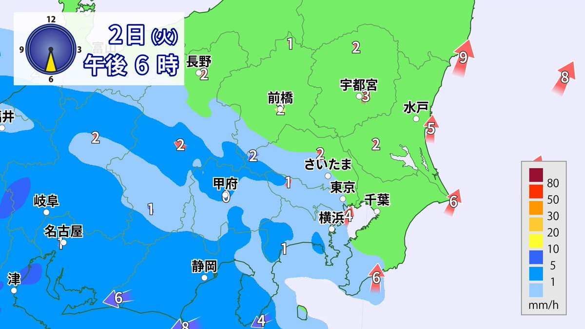
Torishima / INTPさんがリポスト
アニメのシナリオ打ちやないか
さ
@hisagrmf
帝国データバンクの面白文書「組織の壊し方」は日本人は必見
相鉄が化けてる…
HTB北海道ニュース
@HTB_news
市営地下鉄東西線の手稲区への延伸 １キロあたり約４００億円のコストを高架化で減らせる？ #北海道 #HTB北海道ニュース
https://
htb.co.jp/news/archives_
37888.html
…
今週末は、土曜日は聖蹟桜ヶ丘、日曜日は沼津へ行きます。
クアルコム、データセンター用半導体 「エージェントAIの1年に」
クアルコム、データセンター用半導体 「エージェントAIの1年に」
ギズモード・ジャパン（公式）さんがリポスト
Nape Pro来た。私は初期出荷組だと思うが半年以上待ったかな？触ってみた感じかなり良い。角度は45°単位で変えられるみたい。Keychron Launcher対応。BTだけでなく2.4GHzドングルついてきたのは期待してなかったので驚いた。#NapePro
X民「引きこもり146万人ってもう個人の問題じゃなく社会設計だろ。100万人超えの現象を『甘え』で説明するのは無理がある」→大拡散 #炎上
X民「引きこもり146万人ってもう個人の問題じゃなく社会設計だろ。100万人超えの現象を『甘え』で説明するのは無理がある」→大拡散 - オレ的ゲーム速報@刃の記事ページ
jin115.com
【台湾現地レポート】ASUS「Republic of Gamers」20周年モデルが一挙発表！ 日本国内向けにも展開予定
https://
gamespark.jp/article/2026/0
6/02/167247.html?utm_source=twitter&utm_medium=social&utm_content=tweet
…
存続に向けた協議を打ち切り…名古屋鉄道広見線・新可児〜御嵩の区間が廃線へ 自治体側は2028年度末までの継続を要望
https://
youtu.be/Nm1lfcumGVg?si
=5rnKv38vsyPUvG8S
…
@YouTube
より
以前に、聖地巡礼で2回ほど行ったな、、、最後に行ったのが、2019年
#星空へ架かる橋
#feng
#御嵩駅
#聖地巡礼
私より後に入社した社員が突然来なくなった。一昨日までは普通に仕事をしていたのだが…入ってから約３ヶ月でその日に突然退職しますと言うはやめてくれ…
というわけで、昨日から3日間夜勤ワンオペになりました…辛いぜ
おまけに木曜日が休みだったのに夜勤に入る羽目に...頑張ります…
アイマスコンテンツ、出てくるアイドルの中にアイドルとプロデューサーの距離感が「アイドルとプロデューサー」じゃなくて「男と女」の輩がいるからゲームやってて「こっこいつ〜〜アイドルなのに裏でPと繋ろうとしやがってよ〜〜〜」とぶちギレそうになることある
TOPIX、強まるAI指数化 最高値にトヨタの貢献なく
TOPIX、強まるAI指数化 最高値にトヨタの貢献なく
コーディング経験がまったくないと適切な構想・指示・判断ができそうにないので基礎もぜひ
ほりたん
@horilab
AI時代のプログラミング教育はコーディングから構想・指示・判断へ：教育とICT Online
https://
project.nikkeibp.co.jp/pc/atcl/19/06/
21/00003/052800717/
…
オタク起床
AIが買い物を代行する「エージェント・コマース」時代、Googleが提唱するUniversal Cartとは | IoTNEWS AI+
AIが買い物を代行する「エージェント・コマース」時代、Googleが提唱するUniversal Cartとは | IoTNEWS AI+
エージェントコマース＝AIエージェントが、人間の代わりにECで買い物をしてくれる。そしてこのエージェントコマース時代に合わせて、グーグルがユニバーサルカートという構想を発表。どこで見つけた商品でも同じ1つのカートに集約でき、永続的にカートに保存され続ける。↓
テスラさんがリポスト
別記事。
ん？南砺市泉沢の畑って城端じゃないですか！しかも「駒田蒸留所へようこそ」制作のピーエーワークスさんの近所。
黄金色の大麦、ウイスキー原料に 若鶴酒造とＪＡなんと（富山）が初収穫（北日本新聞）
黄金色の大麦、ウイスキー原料に 若鶴酒造とＪＡなんと（富山）が初収穫（北日本新聞） - Yahoo!ニュース
自由だけど、つながってる。つながってるけど、束縛されない | 佐々木俊尚「毎朝の思考」/ Voicy - 音声プラットフォーム
自由だけど、つながってる。つながってるけど、束縛されない | 佐々木俊尚「毎朝の思考」/ Voicy - 音声プラットフォーム
人類学の視点から、ノマド的な人生や共同体について解き明かした新刊書「ノマドという生き方」。Voicyで解説しました。↓
AVITAMINOSEさんがリポスト
【台風情報】
台風6号(チャンミー)から離れた本州や四国でも前線の影響で土砂降りの雨となっている所があります。線状降水帯が発生し大雨になるおそれも。
台風は今日午後に九州や四国に接近し、明日3日(水)は紀伊半島〜東日本に接近または上陸のおそれがあります。
https://
weathernews.jp/news/202606/02
0061/
…
水やり忘れていたら…「節水」で生き延びる小麦発見 神戸大など（毎日新聞） - Yahoo!ニュース
水やり忘れていたら…「節水」で生き延びる小麦発見 神戸大など（毎日新聞） - Yahoo!ニュース
乾燥・干ばつに強い小麦を、偶然から発見したというドラマのような展開。「実験に使ったあと廃棄する予定で放置していた複数の小麦の中に、一つだけ枯れずに元気な葉を茂らせている株を発見」↓
同志社国際高校では過去、沖縄の普天間基地の地元にある普天間高校との交流プログラムを行っていた。地元高校生たちの意見を聞き、「今まで学習してきた内容や、ニュースで聞いていたこと、思い込んできたことと違う観点からの意見を聞いた衝撃が感想文から感じ取れる。事実、感想文の多くがこの交流プ
普天間高校との交流会｜辺野古ボート転覆事故遺族メモ
普天間高校との交流会｜辺野古ボート転覆事故遺族メモ
Bluetoothヘッドフォン「Soundcore Life Q35」を解析し、あの「Doom」を動かす少年ハッカーが登場!!
本ハックは、Doomのゲーム操作を、ヘッドフォンに搭載されたスイッチ/スクロール等で行えるのが脅威であるのだが、なんと作者様は自称15歳という事に驚愕を隠せないッッ!!
https://
github.com/nnonickreal/op
enqore
…

神戸では中華風の牛バラ煮込みを「シチュー」と呼んでいるという現地探索ルポ漫画。たいへん興味深く、楽しく読んだ。そしてめちゃめちゃ美味しそう。↓
わたしは神戸に向かっていた、神戸の中華料理屋で「シチュー」と呼ばれている料理を食べてみるためである… 「なんでこれが『シチュー』なの？」と気になり、神戸中華「シチュー」を食べた話
わたしは神戸に向かっていた、神戸の中華料理屋で「シチュー」と呼ばれている料理を食べてみるためである… 「なんでこれが『シチュー』なの？」と気になり、神戸中華「シチュー」を食べた話
渋谷のさかえ湯、再来年に区の再開発で立ち退きか…もともとマンションへ建て替える時に銭湯を止めるつもりだったのが、「当時の渋谷の開発ラッシュで集まっていた労働者に反対されて銭湯を残した」という話のあるさかえ湯が再開発で閉じるのすごい運命というかもはや歴史の一部だ。近々また行こう。
「JR再統合」を今こそ論じるべき理由、成功とされた国鉄分割民営化の“限界”
「JR再統合」を今こそ論じるべき理由、成功とされた国鉄分割民営化の“限界”
JRが地域別に別会社になっていることの面倒さって本当理解されにくい話。JR再統合を提案する記事。「インバウンドとデジタルの時代には、顧客は会社別ではなく『旅全体』で日本を評価する。訪日客にとって、東海道新幹線と山陽新幹線のサービス差や、三島でのICカードの不整合は、企業制度の問題ではな
中国国債を買う日本勢 低インフレ・金融緩和にらむ、人気は短期か
中国国債を買う日本勢 低インフレ・金融緩和にらむ、人気は短期か
Shokzの肝は「シリコン」にあり。中国・深圳で目にした、イヤホンづくりの裏側
Shokzの肝は「シリコン」にあり。中国・深圳で目にした、イヤホンづくりの裏側 | ギズモード・ジャパン
このお弁当箱、ほぼ冷蔵庫。しかもレンチンなしで温めもできるんです #BuyPR
このお弁当箱、ほぼ冷蔵庫。しかもレンチンなしで温めもできるんです | ギズモード・ジャパン
山口祐加さんとのポッドキャスト。今週はいよいよ夏野菜の季節になってきたということで、ナスの美味しい食べかたについて存分に語り合いました。↓
#20 なすの美味しい食べ方／食べるは続くよどこまでも
https://
buff.ly/ER4vTrq
https://
buff.ly/1RV67G0
Podcast Episode · 食べるは続くよどこまでも · May 31 · 26m
podcasts.apple.com
恐ろしい指摘。北朝鮮はウクライナ戦線に14000人を派兵し、うち6000人が戦死。しかし「問題は犠牲者の数ではない。生き残った兵士がドローン、電子戦、現代戦の知見を朝鮮半島へ持ち帰るとき、128万人の軍隊が変わる。日本が警戒すべきなのは、まさにその変化だ」↓
｢プーチンに組して6000人戦死｣でも金正恩はほくそ笑む…北朝鮮兵の生き残りが持ち帰った"意外な戦利品"
｢プーチンに組して6000人戦死｣でも金正恩はほくそ笑む…北朝鮮兵の生き残りが持ち帰った"意外な戦利品"
ファミマがレジ横コーヒー刷新 商品数3倍、LLサイズも発売
https://
nikkei.com/article/DGXZQO
UC012JA0R00C26A6000000/?n_cid=SNSTW005&n_tw=1780297765
…
商品数は15品から45品に増え、2026年内に約60品まで拡大します。メニューに合わせて豆のひき方を変える機能を搭載したのが特徴です。
ファミマがレジ横コーヒー刷新 商品数3倍、LLサイズも発売
ポジティブな感情もネガティブな感情も、あまり外に出さないようにするという「感情ミュート社会」。コミュニケーションが主体の社会に変化してきたことで、なるべく凪の精神状態に留めておきたいという願望が強くなっている面もあるのかも。博報堂生活総研の研究ですね。↓
職場と家庭で広がる"感情ミュート社会"とは何か？過半数が｢気持ちを出さない｣時代､喜びさえも抑える理由とは？
職場と家庭で広がる"感情ミュート社会"とは何か？過半数が｢気持ちを出さない｣時代､喜びさえも抑える理由とは？
【悲報】現役世代の税金・社会保険料負担率、過去最大に・・・ #炎上
【悲報】現役世代の税金・社会保険料負担率、過去最大に・・・ - オレ的ゲーム速報@刃の記事ページ
jin115.com
メキシコの「人形島」にインスパイアされたサイコサバイバルホラー『Where Dolls Hang』発表！
https://
gamespark.jp/article/2026/0
6/02/167246.html?utm_source=twitter&utm_medium=social&utm_content=tweet
…

まさかの3人同じ誕生日！
4児のママが次男、三男、長女の母子手帳を開くと…… ミラクルすぎる光景が165万回表示「天文学的確率」「本当に奇跡ですね！」
（記事URLはリプから）
4児のママが次男、三男、長女の母子手帳を開くと…… ミラクルすぎる光景が165万回表示「天文学的確率」「本当に奇跡ですね！」（1/3） | 教育・子育て ねとらぼ
おはようございます。
「Summer Game Fest」の模様は6月6日に配信。忘れずに見たい「今週の公式配信番組」ピックアップ
https://
4gamer.net/s/G042182.2606
01049
…
PlayStationの情報番組「State of Play」は6月3日6：00に配信となる
日本人の税金で外国人雇用に助成金出す差別制度作っておいて
これを言えるのか厚生労働省
厚生労働省
@MHLWitter
【6月は「#外国人雇用啓発月間」です】
国籍で差別しない公平な採用選考を行っていますか？
日本国籍でないことや外国人であることのみを理由に、採用面接などの応募を拒否することは、公正な採用選考の観点から適切ではありません。
■外国人雇用のルール
https://
mhlw.go.jp/content/116550
00/001699537.pdf
…
配車アプリのGO、ブラックロックなどが出資へ 海外機関投資家で3割
配車アプリのGO、ブラックロックなどが出資へ 海外機関投資家で3割
深津 貴之 / THE GUILD, noteさんがリポスト
深津さん #Podcastでメタスキルをゴリゴリに深掘り！
出版すぐに、さらなる進化を話せるのがネットのたのしさーー
こちらも実践コメントいただけたらうれしいです。
Spotify
https://
open.spotify.com/episode/0XcoMH
5OM1cJhoAYDmuTU8
…
Apple Podcast
https://
podcasts.apple.com/jp/podcast/%E5
%8A%AA%E5%8A%9B%E3%81%AE%E4%BE%A1%E5%80%A4%E3%81%8C%E5%A4%89%E3%82%8F%E3%82%8B%E6%99%82%E4%BB%A3%E3%81%AE-%E3%83%A1%E3%82%BF%E3%82%B9%E3%82%AD%E3%83%AB-%E3%82%B2%E3%82%B9%E3%83%88-%E5%B0%BE%E5%8E%9F%E5%92%8C%E5%95%93/id1800686361?i=1000770468523
…
深津貴之のGUILD TALK · Episode
open.spotify.com
Torishima / INTPさんがリポスト
月が燃える程絶賛に溢れるNetflix発神アニメ #超かぐや姫
の卒業記念舞台挨拶が開催されるそうです
このお知らせとほぼ同時に小説版も10版の通知もいただきました
誠に誠に、ありがとうございます
全ては盛り上げていただいた皆様のおかげです。最後のファンサが最高のパーティーになりますように
『超かぐや姫！』公式
@Cho_KaguyaHime
──── ✩₊⁺⋆⋆⁺₊✧ ────
“最後のファンサだ！”
卒業記念舞台挨拶 開催決定
──────────────
ロングラン上映を続けてきた本作は
【6月18日(木)】で上映を終了いたします。
※一部劇場除く
応援してくれた皆さまへの
「最後のファンサ」として、
おきた。コロッケ買いに行くか。
ソフトバンク、携帯の短期解約に「解除料」 最大1100円
ソフトバンク、携帯の短期解約に「解除料」 最大1100円
ボク、貝印とコラボしたスライムだよ！ メイクアップパフなんだ
ボク、貝印とコラボしたスライムだよ！ メイクアップパフなんだ | ギズモード・ジャパン
嵐、ラストLIVE後に所属事務所の「アーティスト一覧」から姿を消す
↓
あるジャニオタが他のジャニオタのために削除前のスクショを共有
↓
自分は無断でスクショしておきながら周囲には「無断保存するな」と謎理論を展開し炎上
↓
アカウント削除に追い込まれ、大好きな嵐と共に仲良く姿を消す(今ここ)
滝沢ガレソ
@tkzwgrs
【話題】ジャニオタさん、嵐のラストLIVEと「実父のお通夜」が同日に被った結果、迷わず嵐を優先して親族からブチギレられる
「自分の親の最後くらい責任もって仕事しろや派」と「天国の父親はきっと『嵐みてきな！』と言ってくれてるし問題ないっしょ派」が大論戦に x.com/tkzwgrs/status…
『まのさば』開発元新作『魔法少女ノ因習村』Steamストアページ公開！視点が変わるたびに真実が反転する“魔法少女×因習”ADV
https://
gamespark.jp/article/2026/0
6/02/167245.html?utm_source=twitter&utm_medium=social&utm_content=tweet
…
めまいや立ちくらみ、熱中症の初期症状かも 高齢者や室内も注意
めまいや立ちくらみ、熱中症の初期症状かも 高齢者や室内も注意
日経平均株価、連日の最高値うかがう（先読み株式相場）
日経平均株価、連日の最高値うかがう（先読み株式相場）
大分？
だじゅうる＠マスコットブログ
@dajudajudaju
#とある市 セレクション
人口46.7万（県内総人口の43％）
オイシックスが低利用魚のケバブサンド 大学生と開発
https://
nikkei.com/article/DGXZQO
UC0157X0R00C26A6000000/?n_cid=SNSTW005&n_tw=1780319434
…
市場流通が少ないマルソウダガツオ。スパイスやソースで味付けし食べやすくしたそうです。東京都品川区の「雨晴食堂」で６月12日まで提供、4〜11日には食品宅配でも販売します。
オイシックス、低利用魚のケバブサンド発売 大学生と開発
SNS各社が投稿削除対応を公表 Xやメタ、情プラ法の施行で
SNS各社が投稿削除対応を公表 Xやメタ、情プラ法の施行で
フロリダ州がOpenAIとアルトマンCEOを提訴 ChatGPTを「子供を危険にさらす製品」と非難
フロリダ州がOpenAIとアルトマンCEOを提訴 ChatGPTを「子供を危険にさらす製品」と非難
これ、今年と下半期ぐらいまで引っ張れば同志社国際の志願者数に影響出るんでは？そのときになって学校は気付くと思うが手遅れだろうなぁ。
新宿会計士
@shinjukuacc
これ、何度でも読んでしまう。
法人と高校はトップすら辞めてないし活動家らも何も反省してないが…。
加害者たちから見ると、このご遺族の冷静な筆致が逆に怖くないのかな？
これご遺族は文科省報告書で本件幕引きにするつもりが絶対になさそう。
もちろん、この状態での幕引きは絶対に許されない。 x.com/Beloved_Tomoka…
なるせひろのりさんがリポスト
【外国人の不動産取得 規制見送りへ】
外国人の不動産取得 規制見送りへ - Yahoo!ニュース
◆ 朝メモ
・NVIDIAがAIパソコン参入
・Anthropic 秋にも上場
NVIDIAのニュースを受け、ArmやソフトバンクG（ADR）、Dellなどの株価が大きく上昇しています
くわしくはnoteで
【朝メモ】 NVIDIA AIパソコン参入 / Anthropic秋にも上場｜後藤達也
貝さんさんさんがリポスト
ジンランとジンラン姉もいいぞ！ #上伊那ぼたん
フジクラ社長、光ファイバーの米国工場「30年から稼働へ」
フジクラ社長、光ファイバーの米国工場「30年から稼働へ」
日本経済新聞 電子版（日経電子版）さんがリポスト
トヨタ、豊田大輔氏が帰任へ ウーブン・バイ・トヨタSVPは退任
トヨタ、豊田大輔氏が帰任へ ウーブン・バイ・トヨタSVPは退任
自民党の県議の耳には入ってるから、代表質問に織り込まれて無視できなくなると思う。海上保安庁が知事選の直前という絶妙なタイミングで船長逮捕、団体事務所にガサ入れというのもありそうで。
EARLの医学&AIノート
@EARL_med_tw
辺野古転覆事故で亡くなった女子生徒の遺族が玉城デニー知事に実質の公開質問状
https://
note.com/beloved_tomoka
/n/n68b286247f8d
…
玉城デニー知事は無視を決め込むに一票
川口"k-shi"貴志 / ゲームの音響や触覚でUXを考える人さんがリポスト
「とりあえず動くからリリースしようぜ」の精神で世に出してみる
ゲームBGM界隈向けイントロ付きサスティンループマーカー自動埋め込みツール
AutoLooper v0.1.0-beta Release
https://
github.com/YoshimiKudo/Au
toLooper/releases/tag/v0.1.0-beta
…

工藤吉三
@yoshimikudo
一部で界隈の身に需要がありそうな
イントロ付きループBGMを読み込ませると
サスティンループマーカーを勝手に打ってくれる
ツールがあればいいなと思っててバイブスでコーディングしてたら、まじで出来る時代がきてこわい
なるせひろのりさんがリポスト
ヤンチャンWEBにて最新話が更新されました
ぜひ
片田舎のおっさん、剣聖になる - 乍藤和樹/佐賀崎しげる/鍋島テツヒロ[ヤンチャンWeb] #おっさん剣聖
片田舎のおっさん、剣聖になる～ただの田舎の剣術師範だったのに、大成した弟子たちが俺を放ってくれない件～・第41話②
アジアの「出稼ぎ経済」揺さぶる中東危機 細る送金、帰国する貧困層
アジアの「出稼ぎ経済」揺さぶる中東危機 細る送金、帰国する貧困層
AVITAMINOSEさんがリポスト
#線状降水帯 の発生が心配されているけれど・・
実況重視はもちろんだけど、ある程度のメド？はつけておきたいもの。
Windyのアニメを見るにしても着目点は意識したい・・ということで、06時の実況（レーダー画像＋衛星赤外画像）を見ながらあれこれ落書き。
暖湿気の流入と言うけれど？
気象予報士Kasayan 番外編！
@kasayan77
「台風東側に暖かく湿った空気が流れ込んで」と解説されることが多いので、特に強い暖湿気の流れ込みの様子を専門天気図に落書き。
この図は上空約1500mの様子だけど、もっと海面に近い場所の暖湿気と風の収束、山岳による強制上昇が局地的な激しい雨を降らせる可能性も。
レーダーで実況重視。
なるせひろのりさんがリポスト
注目なのがメモリ帯域幅が600GB/sもある点です。
これCPU-GPU間の帯域幅の話でGPUメモリーの帯域はDGX Sparkと全く同じ273 GB/sみたいですね。発表が紛らわしかったみたいで、勘違いしてる記事多発されそう。。。西川善司の記事が待ち遠しいです。
NVIDIAが新チップ「RTX Spark」を発表。“AI性能が超いいWindows PC”がくるって話ですよー | ギズモード・ジャパン
日本経済新聞 電子版（日経電子版）さんがリポスト
国旗損壊罪法案、国民民主党・玉木代表「違憲立法だ」
国旗損壊罪法案、国民民主党・玉木代表「違憲立法だ」
消費税減税「国債増やさず対応案」、政府内に浮上 成長前提に危うさ
消費税減税「国債増やさず対応案」、政府内に浮上 成長前提に危うさ
丸紅が沖縄ツーリスト買収、100億円前後 訪日客消費取り込み
丸紅が沖縄ツーリスト買収、100億円前後 訪日客消費取り込み
Haruhiko Okumuraさんがリポスト
名門カリフォルニア大学で“中学数学を教え直す”異常事態 理工系教員ら1000人超が連名で抗議文書 原因は……
名門カリフォルニア大学で“中学数学を教え直す”異常事態 理工系教員ら1000人超が連名で抗議文書 原因は……
【賛否】『しつけとしての暴力』は許されるのか、それとも許されないのか。右も左もわからない子供へのしつけはどうすればいいのか #雑談・その他の話
【賛否】『しつけとしての暴力』は許されるのか、それとも許されないのか。右も左もわからない子供へのしつけはどうすればいいのか - オレ的ゲーム速報@刃の記事ページ
jin115.com
【大阪のマンション賃料、伸び率世界一】
https://
nikkei.com/article/DGXZQO
UB269X70W6A520C2000000/?n_cid=SNSTW005&n_tw=1780311725
…
半年で3.1%上昇し、ニューヨークや東京を上回りました。背景にあるのは新街区「グラングリーン大阪」など都市部で進む大規模再開発。利便性重視で、都市に近接する住宅需要が高まっています。
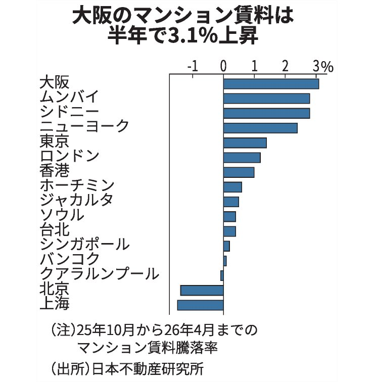
貝さんさんさんがリポスト
「人類は糖質の奴隷と言っても過言じゃないんだよ」
#マケイン
コンクリートブロックの穴で、ネギを育てたら→「ちょっと感動した」まさかの成長姿が240万表示「すげえ」「完璧すぎる」（1/2） | ライフスタイル ねとらぼ
実は「ネギを育てる用の穴」説
コンクリートブロックの穴で、ネギを育てたら→「ちょっと感動した」まさかの成長姿が240万表示「すげえ」「完璧すぎる」
（記事URLはリプから）
なるせひろのりさんがリポスト
ばあちゃん
「もしもし…実はね…昨日の夕方ね…」
僕
「はいはい」
ばあちゃん
「バックしたらね…自分家の壁がね…」
僕
「うん」
ばあちゃん
「急にそこにあってね…」
僕
「前から壁はあったと思いますよ」
ばあちゃん
「それでね、ガリッとね…」
僕
「うん」
ばあちゃん
AVITAMINOSEさんがリポスト
警報級の大雨や暴風となる可能性タイムラインの関東版を配布します。関東が荒れてくるのは水曜日になってからです。
なるせひろのりさんがリポスト
岩屋毅さん国旗損壊罪に納得が行かず会を途中退席した模様
岩屋 「途中退席をした。私自身があの立法そのもの、条文案の中身の得心を出来ていないという事は申し上げて退席した」
何故こいつはそんなに国旗損壊罪に反対するのか。
国旗損壊罪で困る団体が背後にいたりするの？
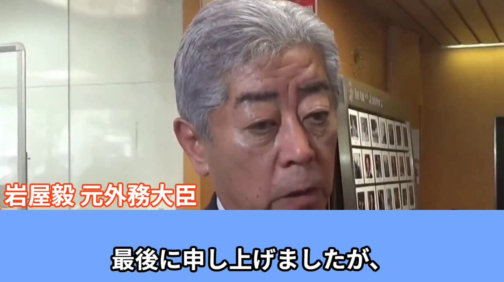
日本経済新聞 電子版（日経電子版）さんがリポスト
DAZN、ファン拡大へW杯の独占配信選ばず
https://
nikkei.com/article/DGXZQO
DH27C500X20C26A5000000/?n_cid=SNSTW005&n_tw=1780318436
…
ワールドカップはDAZNに加え、NHK、日本テレビ、フジテレビが地上波で約60試合を放送。
DAZNジャパンの笹本CEOは「多くの人にスポーツに触れてもらわないと市場が縮小する」と危機感を語りました。

日本経済新聞 電子版（日経電子版）さんがリポスト
夏のボーナス、理想との差は25万円 賞与の低さで転職検討も
https://
nikkei.com/article/DGXZQO
UC017J40R00C26A6000000/?n_cid=SNSTW005&n_tw=1780311061
…
マイナビが発表した2026年夏の賞与の予想支給額は平均55万2000円、仕事に見合う理想額は80万2000円でした。
25年夏の賞与額については、51%が「納得している」と答えました。
夏のボーナス予想支給額、理想と25万円開き 賞与の低さで転職検討も
ASUS「ROG XBOX Ally X20」発表！ディスプレイがOLEDになりサイズが7.4インチにアップなど多彩な進化
https://
gamespark.jp/article/2026/0
6/02/167244.html?utm_source=twitter&utm_medium=social&utm_content=tweet
…
米国の対日原油輸出、3カ月連続で過去最高 イラン攻撃前の3倍超
米国の対日原油輸出、3カ月連続で過去最高 イラン攻撃前の3倍超
Anthropicが上場申請
Anthropicが上場申請
日本経済新聞 電子版（日経電子版）さんがリポスト
米名門大の秀才を襲う就職難「とにかく仕事が欲しい」 8000社玉砕、米国大卒の現実
https://
nikkei.com/article/DGXZQO
GN2800W0Y6A520C2000000/?n_cid=SNSTW005&n_tw=1780342591
…
「low hire, low fire」米国労働市場では、雇用の空きが生まれにくくなっています。
米名門大の秀才を襲う就職難 8000社玉砕、コンピューター専攻で悲劇
Torishima / INTPさんがリポスト
藤原ヒロシがメルカリ使ってるのは有名だが、食べログもめちゃくちゃ投稿してる。素朴な感想が良い
食べログレビュアー藤原 ヒロシさんのページ『面白い食』-
tabelog.com
日本経済新聞 電子版（日経電子版）さんがリポスト
米アルファベットが12兆円増資 AI資金確保、バークシャーも引き受け
米アルファベットが12兆円増資 AI資金確保、バークシャーも引き受け
日経平均先物、大取の夜間取引で上昇 180円高の６万7260円
日経平均先物、大取の夜間取引で上昇 180円高の6万7260円
AVITAMINOSEさんがリポスト
「台風東側に暖かく湿った空気が流れ込んで」と解説されることが多いので、特に強い暖湿気の流れ込みの様子を専門天気図に落書き。
この図は上空約1500mの様子だけど、もっと海面に近い場所の暖湿気と風の収束、山岳による強制上昇が局地的な激しい雨を降らせる可能性も。
レーダーで実況重視。
AVITAMINOSEさんがリポスト
TVでもネットでも流行りのWindyのようなアニメで #台風6号 の解説？をしているので、アニメの「理由」を考え腑に落として対策するための参考にしていただければと・・・専門天気図に台風進路や雨雲の発達に寄与する気象現象等を落書き。
ジジイ予報士が早朝に寝ぼけ眼で落書きしたのでそのつもりで
日本経済新聞 電子版（日経電子版）さんがリポスト
サッカーW杯チケット再高騰、日本戦で4割 トランプ氏も｢払わない｣
サッカーW杯チケット再高騰、日本戦で4割 トランプ氏も｢払わない｣
日本経済新聞 電子版（日経電子版）さんがリポスト
働く単身者の税・保険料負担率、過去最高33%に 世界に逆行
https://
nikkei.com/article/DGXZQO
UA307RI0Q6A430C2000000/?n_cid=SNSTW005&n_tw=1780327699
…
家族世帯より給付や控除が少なく、社会保険料の増加やインフレによる「実質増税」が負担を押し上げています。
働く単身者の税・保険料負担率、過去最高33%に 世界に逆行
Haruhiko Okumuraさんがリポスト
スターバックスが「精度99%」のAI在庫管理ツールを9ヶ月で廃止した。この、「精度99%」が「きれいな倉庫、良い照明、整理された棚」じゃないと、正常に作動しないらしく、実際のラッシュ時のバックルームでは誤認識が続出。バリスタがAIの間違いを手動で直す羽目になり、仕事が減るどころか増えた。
人気ホラーゲーム『Fears to Fathom』シリーズの開発者が手がける新作『Farsight』発表。視力検査機の中に閉じ込められる！？
https://
gamespark.jp/article/2026/0
6/02/167243.html?utm_source=twitter&utm_medium=social&utm_content=tweet
…
ギガファイル便はニッチビジネスだよな、あれ多分音プレサーバだから何とかなってんだろうし
協議停止か、イラン外相｢責任は米国｣ トランプ氏は打ち消しに必死
協議停止か、イラン外相｢責任は米国｣ トランプ氏は打ち消しに必死
なるせひろのりさんがリポスト
（ ´_ゝ`）玉木代表、国旗損壊罪は「違憲立法」「表現の自由を規制」外国国旗とは「保護法益が異なる」
（ ´_ゝ`）玉木代表、国旗損壊罪は「違憲立法」「表現の自由を規制」外国国旗とは「保護法益が異なる」
日本経済新聞 電子版（日経電子版）さんがリポスト
株価急落のスタバ 国内外に響く不協和音、遠いブランド力回復
株価急落のスタバ 国内外に響く不協和音、遠いブランド力回復
NVIDIA がロボ作ったんか？と思ったらボディ本体は Unitree 製らしい？急速に諸々進みつつあるな
Humanoids daily
@humanoidsdaily
速報：NVIDIAとSharpaがGTC TaipeiでNVIDIA Isaac GR00Tリファレンスヒューマノイドロボットを発表しました—物理AI研究のための標準化されたオープンなハードウェアおよびソフトウェアリファレンスデザインです。
パソコン新時代、自分で操作からAI委任へ NVIDIA半導体が促す転換
パソコン新時代、自分で操作からAI委任へ NVIDIA半導体が促す転換
8割企業が総人件費増、ベア・初任給引き上げで 引き留めで負担拡大
8割企業が総人件費増、ベア・初任給引き上げで 引き留めで負担拡大
NYダウ46ドル高、新製品発表でエヌビディア6％高 米原油92ドル台
NYダウ46ドル高、新製品発表でエヌビディア6%高 米原油92ドル台
日本経済新聞 電子版（日経電子版）さんがリポスト
まるで軍艦島 瀬戸内海に会社所有の島、日本一の鉛製錬所
まるで軍艦島 瀬戸内海に会社所有の島、日本一の鉛製錬所
7割の企業で会社予想超え 27年3月期の上振れ期待ランキング50社
決算:7割の企業で会社予想超え 27年3月期の上振れ期待ランキング50社
日本経済新聞 電子版（日経電子版）さんがリポスト
メモリー株急騰、「1兆ドルクラブ」入り スーパーサイクル論が台頭
メモリー株急騰、「1兆ドルクラブ」入り スーパーサイクル論が台頭
むくり。
工場の振動で樹脂や医薬品を生産 「圧電触媒」大阪大学など技術磨く
工場の振動で樹脂や医薬品を生産 「圧電触媒」大阪大学など技術磨く
原発再稼働、災害リスク→施設設計の2段階審査に 事業者の負担軽減
原発再稼働、災害リスク→施設設計の2段階審査に 事業者の負担軽減
今からキオクシア買いたくても725万円無いと買えねえじゃねえか
ソフトバンクGの仏投資、狙いは｢電力｣ データセンターの弱点商機に
ソフトバンクGの仏投資、狙いは｢電力｣ データセンターの弱点商機に
ほ！？！？！？なんか知らん内にソフトバンクが日本全一になっとる！！！！キオクシアが全三！！！
日本経済新聞 電子版（日経電子版）さんがリポスト
キオクシア、好業績導く「基板貼り合わせ」技術 性能はサムスン超え
キオクシア、好業績導く「基板貼り合わせ」技術 性能はサムスン超え
うひょ
けんすう
@kensuu
異世界に「ひろゆき」が行ったらどうなる？というまさかの作品。
ひろゆきさんを25年以上見てきた僕からしても、かなり「ひろゆき」してる最高の漫画です。
今なら33円で買えるらしいです。
#PR #AmazonJPKindle #Kindle本33円セール
早くも梅のエキスが上がってきた。
元FPSプロゲーマー「プロゲーマーを目指してる少年へ。無理ですよ。諦めてください。時間の無駄です。99.9%続けられないです」 #ゲーム業界
元FPSプロゲーマー「プロゲーマーを目指してる少年へ。無理ですよ。諦めてください。時間の無駄です。99.9%続けられないです」 - オレ的ゲーム速報@刃の記事ページ
jin115.com
なるせひろのりさんがリポスト
岩屋毅、国旗損壊罪に納得が行かず会を途中退席し、記者団を前に饒舌になる
岩屋
「途中退席をした。私自身があの立法そのもの、条文案の中身の得心を出来ていないという事は申し上げて退席した」
AVITAMINOSEさんがリポスト
台風6号
気象庁3時の実況と予報、暴風域に入る確率
上段の暴風警戒域（予報円の周りの赤いエリア）を見ると3日3時の予報円の周りの紀伊半島付近で暴風警戒域は無くなっていて、言葉通りに受け取ると暴風に警戒が必要なのはここまでというふうに解釈することも出来る
ガルクラで利益出なくても他でボロ儲けしているのだな・・・
日本語自体は断然上手いけど、この細かい所をつつくネチっこさは GPT-5.4 を思い出す（つまり ASD っぽい）
饅頭遣い
@manju_summoner
Opus4.8、重箱の隅をつつく回答が多い気がするなぁ…
←Opus4.8 / Opus4.6→
さたけさんがリポスト
#上伊那ぼたん
抱枕正確使用方式
CLI エンコード機能がついた・・・！？
Codex にプロジェクトファイル作らせて自動エンコまでやれるか試してみるか
饅頭遣い
@manju_summoner
ゆっくりMovieMaker v4.53.0.0 を公開しました
https://
manjubox.net/ymm4/release/4
.53.0.0/
…
主な変更点は以下の通りです
・「LUT適用」「エッジ発光」「影（立体投影）」「トライトーン」「分岐とチャンネル合成」「分岐とマップ合成」「余白除去」「コンテナ」「パペット変形」「縁取り（部分）」エフェクトを追加
学パロ嬉しい！！イヤホン共有は大変LOVE
輿水畏子さんがリポスト
是昨天的茶绘
でも全員は救われないのだよなあ
６月すぎたら超かぐ難民になりそうだな
プライム以外にもきたってことか
ほくほく線いいなあ、乗りに行きたいなあ
地震とか風に弱そう
幸い Google アカウントと同じメアドを使っていたので Google ログインで回避できた
ソフトバンクGのトヨタ超え、海外勢「未知の領域」 孫流投資が結実
ソフトバンクGのトヨタ超え、海外勢「未知の領域」 孫流投資が結実
米フロリダ州がOpenAI提訴 「子供の安全対策が不十分」
米フロリダ州がOpenAI提訴 「子供の安全対策が不十分」
日本経済新聞 電子版（日経電子版）さんがリポスト
米名門大の秀才を襲う就職難 8000社玉砕、コンピューター専攻で悲劇
米名門大の秀才を襲う就職難 8000社玉砕、コンピューター専攻で悲劇
誤って一度ログアウトしたらログインを一時的に制限してます、とかで本垢ログインできなくなってしまった・・・Bot だと思われている？
『零』影響の心霊サバイバルホラー『Echograph』デモ版2026年末リリース― 日本語にもローカライズ予定
https://
gamespark.jp/article/2026/0
6/02/167242.html?utm_source=twitter&utm_medium=social&utm_content=tweet
…

5月米ISM製造業の景況感、３年ぶりの高水準 新規受注が増加
5月米ISM製造業の景況感、3年ぶりの高水準 新規受注が増加
超かぐのために全国飛び回ってる異常オタク、複数人いるのが怖い
N/S/R高は生徒数多すぎてどう考えても捌ききれてないんだよな
めっちゃ脳疲れるのは確かに１年前の開発スピード考えたらそりゃあ密度高まってるからそりゃそうなんだけど、その開発スピードに慣れてるし他がそうなりつつある焦り、自分が頑張ればできるとかもあって結局やってしまいがち しかしすでに十分休んでる気がするしな・・・（ぐるぐる目）
岡安モフモフ（アーガイル社長）＠ChatGPT/Gemini/ClaudeなどLLMでサービス作る人
@shields_pikes
これはそう。今の、AIエージェントと一緒に並列フル稼働する8時間労働は、脳疲労が異常。
昭和のビジネスマンなんて、大人数で何時間も会議したり、何度も喫煙室に行ったり、数字を計算したり資料を作るのに何時間もかけたり、印刷に何十分もかけたり、移動に何時間もかけたりしながらの長時間だし。 x.com/ritux6qb/statu…
単語の列挙やりがちなやつがめっちゃ GPT-5.x 構文でおもろい
わらピもち
@Mochimkchiking
日本語の「勝ち筋」は元々、
・将棋
・囲碁
・ゲーム
・戦略論
で使われる言葉です。
つまり、
「状況が苦しい」
↓
「それでも勝つルートを探す」
↓
「勝ち筋」
という文脈が多い。
だから見出しで連呼されると、
「みんなそんなに追い詰められてるのか？」
という空気を感じるんですよね。 x.com/nikq/status/20…
確かに特装版じゃなければ尺が長い割には割と（オタク映画の割には）リーズナブル
シネマシティとチネチッタ、オタク映画館２強が南武線で双璧なの南武線ユーザーなのでずっとじわじわきてる
いい作品だった
何かの「クオリティー」の意味が変わる（質的に異なる代物へ移り変わる）ようなパラダイムシフトが起きた時に、今まであった表現自体が求められなくなる可能性は全然ありそう
アニメの円盤とか BD 自体が配信普及でコレクターズアイテム以外の実用性を持たなくなってるとかが一番近いか？
ｱﾆﾒｰﾀｰK
@cat_thankyou
僕が音MADに疎いこともあるんだけど、これは「誰もが写真を撮れるようになったけど皆が写真家になるわけではない」という意見と同じで、ある瞬間に「クオリティー」の意味が変わったり別のものを求めるようになるんじゃないかと思う、コンシューマーからソシャゲに移行したみたいに。 x.com/izutorishima/s…
マルタの花火工場が爆発した模様。。。
Chaudhary Parvez
@ChaudharyParvez
ヨーロッパ- #マルタのマグタブにあるタ・ルルデス花火工場で、2026年6月1日の現地時間6時36分頃に #爆発 が発生
工場周辺の住宅ビル、車、その他の構造物が損傷を受けた。
これまでに死傷者の報告はない。
AI イラストが俎上に上がれないのはイラストがそこにかけた労力込みで「コミュニケーション」手段になりえるからか、ずっと自分の中で完全に腑に落ちてなかったけど合点が行った
ym404
@ym404
手間がかかってないAI利用は俎上にあがれない。コミュニケーションのためのコストを払ってるかどうかを見るから。
Torishima / INTPさんがリポスト
僕が音MADに疎いこともあるんだけど、これは「誰もが写真を撮れるようになったけど皆が写真家になるわけではない」という意見と同じで、ある瞬間に「クオリティー」の意味が変わったり別のものを求めるようになるんじゃないかと思う、コンシューマーからソシャゲに移行したみたいに。
Torishima / INTP
@izutorishima
少し文脈ズレた話かもしれませんが、音MADを人間の作者抜きにAI生成するのは現状不可能だし、今後も最難関のタスクだと思います
（そもそもネタ選び自体が高度に人間がインターネットで交流し続ける中で生まれた、場合によっては狭い内輪のコンテキストに由来することが多いため） x.com/cat_thankyou/s…
チネチッタ舞台挨拶行きてえ・・・
Torishima / INTPさんがリポスト
https://
tver.jp/episodes/ep3tt
j63l1?p=4234
…
上田と女がDEEPに吠える夜、まだ野田聖子&辻元清美&蓮舫&伊藤孝恵の女性政治家座談会部分しか観てないけど、日テレのゴールデンでこういう番組やれるのすごい。面白かった・・・
上田と女がDEEPに吠える夜 6月1日(月)放送分 「女を捨てろ」「母になるな」女性政治家のリアル!実は仲良し野田聖子&辻元清美&蓮舫&伊藤孝恵が白熱爆笑本音会▽産後うつの恐怖「我が子が可愛くな...
少し文脈ズレた話かもしれませんが、音MADを人間の作者抜きにAI生成するのは現状不可能だし、今後も最難関のタスクだと思います
（そもそもネタ選び自体が高度に人間がインターネットで交流し続ける中で生まれた、場合によっては狭い内輪のコンテキストに由来することが多いため）
ｱﾆﾒｰﾀｰK
@cat_thankyou
ちなみにちなみに僕の話は初期のDJ文化やMAD文化、もしくは2chまとめ動画なんかはおそらく今のAIなら爆速で可能だろうと思うのだけど「それをクリエイティブと呼ばないのか？」という疑問からきている。
「もし戦争が起こったら、国のために戦いますか？」→日本と韓国の違いが話題に #韓国・中国
「もし戦争が起こったら、国のために戦いますか？」→日本と韓国の違いが話題に - オレ的ゲーム速報@刃の記事ページ
jin115.com
タタは自動車ITエンジニア1.1万人 ソフト定義車両開発の最前線
タタは自動車ITエンジニア1.1万人 ソフト定義車両開発の最前線
残留魔法いつもありがとうねえ！！！
世界のEV販売、中東危機後に37カ国が過去最高 原油高で割安感
世界のEV販売、中東危機後に37カ国が過去最高 原油高で割安感
Torishima / INTPさんがリポスト
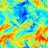
ギガファイルをLINEと一緒にするのはギガファイルへの誹謗中傷が過ぎる
星間𝑋（26）
@sayonaravanity
「LINE」や「ギガファイル便」といった競合がないためあぐらをかいてるサービスのお尻をなんとなして叩きたい。
Haruhiko Okumuraさんがリポスト
Codex はこういう系のミスは基本しないし、ユーザー単位 AGENTS.md で念押ししてるからか数ヶ月問題が起きたことはないな
Claude Code は混乱して頭トチ狂うと信じられないヘマをすることが稀にあるので削除系コマンドはガチガチに縛ってる（2,3枚目参照）
らけしで / Mizmic Studio
@lakeside529
そういえば最近のCodex、こういう環境壊す系のミス全く起きなくなった気がする…… x.com/taitai2661dayo…
Torishima / INTPさんがリポスト
「〇〇を作ってとお願いすること、それに至るまでの発想力自体が高度に能動性を求められるタスク」というのはその通りで、要求したり判断した自覚なく日常的にAIが生成したものを消費すると思う、それがいつどんな形で現れるのかわからないし、閉鎖的なものだとしばらく気づかないと思うけど。
たとえば TikTok が Seedance を使って、既存のガッチリ収集した興味関心データをフル活用してパーソナライズされた AI 生成コンテンツをお届けするようになればまた世界変わるだろうけど、生成コストの高さとそれをペイできる収益モデルが皆無なので、Sora2 も死んだし当分出ないだろうと予想してる
ym404
@ym404
現状の「プロンプトを投げて結果を出力させるAI」ではコンテンツ制作の民主化度合いが足りないんだよね。もっとネトフリのサジェストみたいに、利用者1人にパーソナライズをゴリゴリに効かせたコンテンツをこんなんどうですかってザバザバ出てくるような状態まで行ってようやく、という感じ。
Torishima / INTPさんがリポスト
僕らChatGPTユーザー9億人のうちの0.6%なのかよ…すげえ…
Apexだったらプレデターじゃん…
Simon Smith
@_simonsmith
Codexが500万人のユーザーに達した今、彼らはChatGPTの約9億人のユーザーの約0.6%に到達した。私たちはまだまだ初期段階だ。人々の大半は、AIで既に何ができるのか全く知らない。一方で、ごく少数の人々が自分の私生活や仕事を自動化している。
Torishima / INTPさんがリポスト
ChatGPTが8億人だっけ。この時点で「無料でもLLM使ってるレベルの人間」が総人口の10％を割ってるわけで。クリエイティブ領域の民主化なんてまだまだもいいとこなんだよね。
Torishima / INTPさんがリポスト
「欲しいものを言語化して全貌を設計してピースの作成と組み立てを小分けに依頼できないことには現状AIでの創作はできない」のだからして、そりゃ敷居は高いんですよ。
Torishima / INTPさんがリポスト
自分でゲーム作って分かりましたね。Codexでそこそこクオリティ高いゲーム簡単に作れるけど他の人何でしないんだろうと不思議に思ったら、自分が元ゲーム開発者だからそのスキル持ってたんだと気づきました。
Torishima / INTP
@izutorishima
サムが当時の最新技術で作った Sora2 はまさに『「音MAD作って」「良い感じの環境映像・環境音楽を作って」』を誰でも簡単に自家消費できる社会実装としての問いかけだったわけだが、定着せずサ終して失敗した時点で、少なくとも AI コンテンツ生成は「Push 型」でないと普及しないと思ってる x.com/cat_thankyou/s…
Torishima / INTPさんがリポスト
現状の「プロンプトを投げて結果を出力させるAI」ではコンテンツ制作の民主化度合いが足りないんだよね。もっとネトフリのサジェストみたいに、利用者1人にパーソナライズをゴリゴリに効かせたコンテンツをこんなんどうですかってザバザバ出てくるような状態まで行ってようやく、という感じ。
マイセカイ百景で訪問者に楽しんでもらうための対策ノート（入門編）｜マイネームイズ
https://
note.com/myname_is/n/nf
5a86ce14a6a?sub_rt=share_pb
…
以前Xに投稿していた内容を加筆修正してnoteにまとめました。
マイセカイ百景で訪問者に楽しんでもらうための対策ノート（入門編）｜マイネームイズ
以前も同じ話を呟いたけど、サムアルトマンは Sora2 を大衆にバラ撒いて『一般庶民が内輪/自己満向けショート動画をポン出し生成して楽しむ世界になるか』を壮大に社会実験したが、ハードルの低さにも関わらず巨額のコストを正当化できるほど人が定着せず、賭けに負けたことで証明されてしまったよな x.com/sharp__6/statu…
Torishima / INTP
@izutorishima
以前も同じ話を呟いたけど、サムアルトマンは Sora2 を大衆にバラ撒いて『一般庶民が内輪/自己満向けショート動画をポン出し生成して楽しむ世界になるか』を壮大に社会実験したが、ハードルの低さにも関わらず巨額のコストを正当化できるほど人が定着せず、賭けに負けたことで証明されてしまったよな x.com/sharp__6/statu…
サムが当時の最新技術で作った Sora2 はまさに『「音MAD作って」「良い感じの環境映像・環境音楽を作って」』を誰でも簡単に自家消費できる社会実装としての問いかけだったわけだが、定着せずサ終して失敗した時点で、少なくとも AI コンテンツ生成は「Push 型」でないと普及しないと思ってる
ｱﾆﾒｰﾀｰK
@cat_thankyou
こういう「コンテンツをAIが代替することはあり得るか」みたいな話ばかりだけど、すでに写真の補正がAIで行われているように「いいシーンのまとめを作って」「音MAD作って」「良い感じの環境映像・環境音楽を作って」という辺りがまず一般人をクリエイターにしたり自家消費する時に起きる事だと思う。 x.com/miyabook0303_/…
さっき呟いたこのツイートに関連した言及：
Torishima / INTP
@izutorishima
以前も同じ話を呟いたけど、サムアルトマンは Sora2 を大衆にバラ撒いて『一般庶民が内輪/自己満向けショート動画をポン出し生成して楽しむ世界になるか』を壮大に社会実験したが、ハードルの低さにも関わらず巨額のコストを正当化できるほど人が定着せず、賭けに負けたことで証明されてしまったよな x.com/sharp__6/statu…
サムが当時の最新技術で作った Sora2 はまさに『「音MAD作って」「良い感じの環境映像・環境音楽を作って」』を誰でも簡単に自家消費できる社会実装としての問いかけだったわけだが、定着せずサ終して失敗した時点で、少なくとも AI コンテンツ生成は「Push 型」でないと普及しないと思ってる
ｱﾆﾒｰﾀｰK
@cat_thankyou
こういう「コンテンツをAIが代替することはあり得るか」みたいな話ばかりだけど、すでに写真の補正がAIで行われているように「いいシーンのまとめを作って」「音MAD作って」「良い感じの環境映像・環境音楽を作って」という辺りがまず一般人をクリエイターにしたり自家消費する時に起きる事だと思う。 x.com/miyabook0303_/…
テスラさんがリポスト
「適当にアニメ漫画の展覧会やればオタクは来て金落とすだろ」という舐めた展覧会や「キャラクターの絵を貼っとけばオタクは何でも買うだろ」みたいなグッズが本当に嫌なので、何枚でも描き下ろすし、展示内容もちゃんと考えるマンをやらさしていただきます。
Torishima / INTPさんがリポスト
「AIポン出し特有のインスタントさ」自体がプラスになる表現なるものが存在する場合はマスピ顔でいい局面もあり得るのだろうけど、現段階では懐疑的なんだよね。別の軸を足して補うことはできるにしても。
Torishima / INTPさんがリポスト
「マスピ顔が気にならなくなる」は蛸壺の入り口だしまあまあ良くないよなと思っていて、現状においてもそれだけで商品価値を毀損する要素なんだけど、テック寄りの人は気にしなさすぎというか、商品だと思ってるならもう少しなんとかしてくれというか、そういうのがある。
テスラさんがリポスト
輿水畏子さんがリポスト
元々画像付きで引用しようと思ったんだけど、間違えてうっかり削除しちゃったから
実はこれ、子供の頃の姿に変身してるんだよ（ねえ）
先輩の魔法ってほんとに便利だよね！（笑）
＞ω＜さんがリポスト
Opus 4.6 が到達点だったんだよな・・・
本当に日本語力が高くて EQ 高くて汲み取り能力が高い特性を活かして GPT-5.5 と分担させてるので当面 Opus 4.6 一本かも
ino | 個人開発
@ino461x
Opus明らかに教科学習しすぎじゃないか？
日本語能力が高くてEQも高くて汲み取り能力が高いのがClaudeの個性だったのに、エージェントとしてプログラミング能力を教科学習しまくった結果だとは思うけどほんとに頭がかたいプログラマーみたいになっちゃった
ポン☆潤々さんがリポスト
実はこの記事、元々は個人のnote用に書き始めたのですが「大きな媒体で掲載して貰えれば彩の魅力をよりたくさんの方に伝えられるな…？」と思って編集さんに相談したところ、前回の記事をたくさん読んでいただけたため、掲載OKが出ました…！
一重に皆さんのおかげです…！
日本経済新聞 電子版（日経電子版）さんがリポスト
米AIアンソロピック、IPO申請と発表 160兆円規模で上場へ
米AIアンソロピック、IPO申請と発表 160兆円規模で上場へ
なるせひろのりさんがリポスト
PS5コントローラー「DualSense」を充電できる“フック付きモニター”が8月27日より順次発売決定。希望小売価格は4万9980円（税込）
https://
news.denfaminicogamer.jp/news/260602b
27インチのQHD（2560×1440）IPSディスプレイを搭載。PS5とPS5 Proでは最大120Hz、PCやMacでは最大240Hzのリフレッシュレートに対応
なるせひろのりさんがリポスト
PS初の格ゲー用コントローラー「FlexStrike ワイヤレスファイトスティック」8月6日に発売決定。希望小売価格は3万4980円
https://
news.denfaminicogamer.jp/news/260602b
付属のスリングキャリーケースと内蔵充電式バッテリーによる持ち運びやすさが特徴。PS5およびPCで使える
＞ω＜さんがリポスト
以前も同じ話を呟いたけど、サムアルトマンは Sora2 を大衆にバラ撒いて『一般庶民が内輪/自己満向けショート動画をポン出し生成して楽しむ世界になるか』を壮大に社会実験したが、ハードルの低さにも関わらず巨額のコストを正当化できるほど人が定着せず、賭けに負けたことで証明されてしまったよな
#6@『永久パピルス』
@sharp__6
絶対、ぜっっっったいにAIがどんなに普及しようが一般ユーザーが自分で作品を作る未来は来ない。
これは私自身が昔やったミスでもあるんだけど、一般人の創作意欲を過大に見過ぎてる。 x.com/burata_tantan/…
かずぴー初商業誌『艦砲と戦車の島』発売さんがリポスト
本日、購入させていただきました！
早速、拝読しております。
行きつけの書店で、こが先生の帯に目が止まり手に取りましたが解説も読みやすくお写真も豊富で、ナウル等の南洋の島々に想いを馳せる事ができる素晴らしいご本ですね。
多くの方に読まれる事と、益々のご活躍をお祈りしております。
輿水畏子さんがリポスト
Haruhiko Okumuraさんがリポスト
20260601 教育課程部会 総則・評価特別部会（第9回）グラフィックレコーディング会議概要
Google NotebookLM | Your research and thinking partner, grounded in the information you trust
なるせひろのりさんがリポスト
＼\ご愛読ありがとうございました/／
本日有料公開スタートの204話にて
『幼馴染とはラブコメにならない』
ついに完結です
4年以上の連載期間、応援してくださったみなさまありがとうございました
大人になった幼馴染たちの姿をぜひ、
最終回でお楽しみください
https://
pocket.shonenmagazine.com/title/01648/ep
isode/438371
…
いるか@心が酒びたっているんださんがリポスト
ドライアイスは、子どもの誕生日ケーキの演出にも使われます。スーパーの魚売り場にも当たり前に並んでいます。それが、27歳の研究者の命を奪いました。
NHK徳島放送局
@nhk_tokushima
徳島大学で学生死亡 報告書「ドライアイスの危険性認識甘く」
https://
news.web.nhk/newsweb/na/nb-
8020026001
…
https://
news.web.nhk/newsweb/na/nb-
8020026001
…
いるか@心が酒びたっているんださんがリポスト
生理痛で受診した中学生に、
低用量ピルのフレキシブル投与や、
ミニピルは血栓症リスクないしずっと連続で内服してよい（うまくいけば全然出血ない）、
と治療の選択肢を説明していると、
付き添いのお母様「え？え！さ、最高じゃないですか…！今はそんなに進歩してるんですか…！」
Torishima / INTPさんがリポスト
やっぱほくほく線は良いなー
B作
@Btoretsukuru
ほくほく線の「絶対に雪を積もらせない高架橋」見てきました。レールを敷くのに必要最低限の華奢な構造。でもこの無骨さがかっこいい！
なるせひろのりさんがリポスト
純粋なエレガンスの中の生の力。全く新しいProArt P16およびP14シリーズに出会いましょう。支配するために作られました。
NVIDIA RTX Spark (N1X) スーパーチップ
最大128GBの統一メモリ
ASUS Lumina Pro OLED
エージェントとAIのために作られました。制限なく創造せよ。
なるせひろのりさんがリポスト
FlexStrike ワイヤレス ファイトスティックと PlayStation 27インチ ゲーミングモニターが今月8月に発売され、今年後半には Pulse Elevate ワイヤレス スピーカーが続きます。
新しい予約注文情報とハンズオン詳細:
http://
play.st/438dRKE
Game*Sparkさんがリポスト
【SIE純正アクセサリーを先行試用】PS初のアーケードスティックは、カーブした板面が実に馴染むぜ！PS5がますます楽しくなる3つの周辺機器を一挙体験
https://
gamespark.jp/article/2026/0
6/02/167241.html?utm_source=twitter&utm_medium=social&utm_content=tweet
…
テスラさんがリポスト
小淵沢貴子さんに涙腺刺激される。
360度カメラだから下に振ればご本人の姿も見れる。
ヨタ
@yotagui
南極の昭和基地のGoogleマップ見てたらストリートビューがあって
「へ〜ここ撮った人とかいるんだ？誰が撮ったんだ」
と思って見たら、小淵沢貴子、で涙出てる
よりもい 職場で泣かせないでくれ
Torishima / INTPさんがリポスト
(会社は関係なく個人の思想として)割とマジそう思ってて、だから赤字でもPodcastやって皆にAI触ってくれって2年くらい言い続けてるけどまだ道のり長い。。。周囲はさすがにほぼ皆使ってる。
Keisuke Nishitani
@Keisuke69
まあ昨今のAIブームはみんながAI使えば幸せになるかっていうとそうではなくて、使えないと不幸が訪れる、淘汰される側になりかねないので人より早く使ってポジション取りましょうって話でしかないよな
Haruhiko Okumuraさんがリポスト
Claudeのアカウントが停止されてしまった。
子供によって使用された形跡があると言われた。なぜだ。
Torishima / INTPさんがリポスト
日本で一般に「人工頭脳」「人工知能」ではなく「AI」という語が使われ出したのはいつかをChatGPTさんに調査してもらったところ
「1980年代の第二次AIブームです。背景にはエキスパートシステム、知識工学、Lispマシン、そして日本の第五世代コンピュータ計画があります」
とでてきた。肌感に合う感じ
Haruhiko Okumuraさんがリポスト
cos(sin(x)+x)
は
f(x)=cos(x+Ｉsin(rx))
の特殊ケースとして考えられます（Ｉ=1,r=1）
#FM音源 の #FM合成 と同じ構造なのでグラフだけでなく音としても鳴らせます
Ｉ,r を変化させながらグラフ・周波数領域での sideband・FM合成音を試せるデモサイトを作りました
どうぞ
https://
nc-sandbox.netlify.app/app/fmsynth-fo
rmula/
…
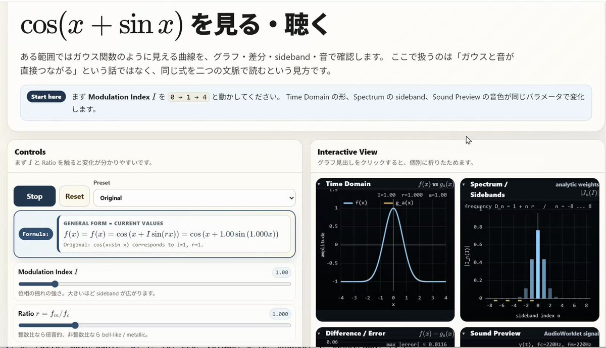
いちごじゃむ
@1strawberry_jam
どうやら y=cos(sinx+x) のグラフは 正規分布のグラフにめちゃくちゃ近いっぽく、何か背景があれば教えてください...
テスラさんがリポスト
Zipper
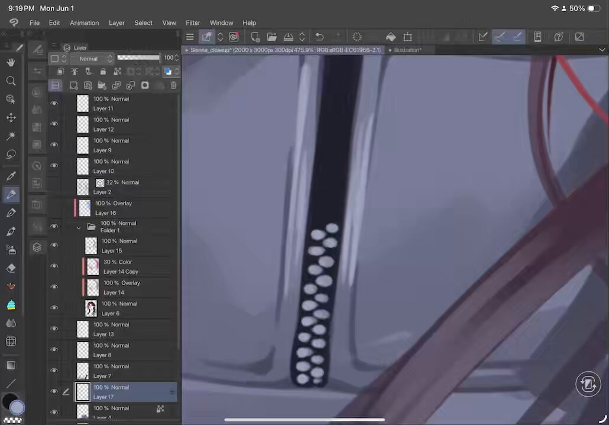
なるせひろのりさんがリポスト
NVIDIAがComputex 2026で、Arm系CPUとBlackwell世代GPUを組み合わせたPC向け基盤「RTX Spark」を発表し、Arm株が寄り前で約14%上昇したと報じられている。
これは「新しいAI PCが出た」というだけの話ではない。
NVIDIAが、データセンターだけでなく、Windows
Torishima / INTPさんがリポスト
『Turkey!』って「謎の戦国ボウリングアニメじゃないの？」と思われがちですが『ＳＦが読みたい！』にタイトルが記載されてるのが証拠で時間超越、時間逆行を繰り返してバッドエンドを回避する2投目があるアニメなんです。ただ『超かぐや姫！』がそれに近いことを後からやってきたんです。
西春っ！Girls
@nishi_haru02
星雲賞、2025年にSF扱いに出来そうなアニメって『もめんたりー・リリィ』『鶴巻ガンダム大合戦』『ミルサブ』、かなり距離空けて博士失踪系『ラザロ』『永久のユウグレ』、ハードSF系『Turkey!』だと思うけど「ちょっと変なSFではあるが流石に星雲賞だよ」は『アポカリプスホテル』なので正しい。
Torishima / INTPさんがリポスト
GPT-5.6は神話級に達する可能性がある
- GPT-5.6は今週ローンチが予定されており、Codexの主要アップデートと同時にリリースされる
- 約2〜3倍低い価格でAnthropicのMythosレベルに達する可能性がある
- 推論、フロントエンド生成、パーソナリティ、エージェント型ワークフローの大幅な改善をもたらす
なるせひろのりさんがリポスト
これは鉄粉もしくはもらい錆び。
キーパーにコーティング後に言われるって
普通はコーティング前に除去しますか？聞いてから施工するんじゃない⁈
ぴの@Tesla
@tesla_pinot
【新車なのにサビサビ】
聞いてください。昨日納車で今日ウキウキでキーパーかけてもらったんです。
引取の時に
「これ、新車…ですよね？」
『はい、昨日納車です！』
「ちょっと見ていただきたいのですが」
とスタッフさんが指差す黒い点々。
「これ、サビなんですよ。ここも、ここも、これも」
貝さんさんさんがリポスト
地方創生、企業誘致でアニメーションスタジオを誘致したい地域の方へ
UIJターンの数人の小規模立地から育てましょう
総務省の移住支援金が使える可能性が有ります
投資額要件は既存製造業の様な大規模投資の可能性は少ないので少なめにした方が良いです
#産業振興 #アニメ産業
とりしま (Sub I/O)さんがリポスト

とりしま (Sub I/O)さんがリポスト
ここだけかぐヤチ逆転世界線①
大川
@kgy_okawa
いろかぐ
貝さんさんさんがリポスト
#瑠璃の宝石
テスラさんがリポスト
ありがとうモトコー！！
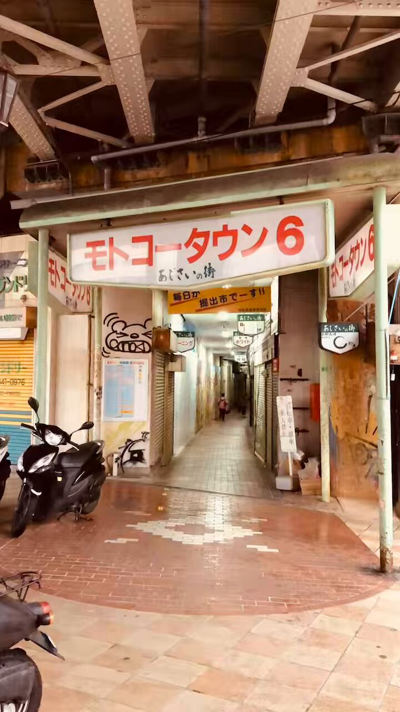

Torishima / INTPさんがリポスト
「Anthropic 社の Mythos はセキュリティの強力なツールだが、同時に予算を圧迫するツールでもある」 The Information の記事。
Mythos は Claude Code のサブスク内で使えるような代物ではなさそうですね。ある会社では約1億5千万円をごく短期間で消費した模様。
Haruhiko Okumuraさんがリポスト
調べると
・鉄腕アトムの連載が始まるのが1952年
・人工知能という単語が作られたダートマス会議が1956年
NDL Ngram Viewerで見ると，80年代の人工知能ブームで電子頭脳と人工知能が逆転する感じですね
https://
lab.ndl.go.jp/ngramviewer/
Torishima / INTPさんがリポスト
Opus4.8、重箱の隅をつつく回答が多い気がするなぁ…
←Opus4.8 / Opus4.6→
ポン☆潤々さんがリポスト
また彩ちゃん記事を書かせていただきました
どうぞよろしくお願いいたします！
アニメイトタイムズ公式
@animatetimes
『アイドルマスター SideM』
キリオのしなやかさ、九郎の熱意、翔真の美しさ……
「彩」のダンプラ動画が彩（さい）高すぎる！
#SideM #良いSHOW
https://
animatetimes.com/news/details.p
hp?id=1780280654&utm_source=twitter&utm_medium=social
…
Torishima / INTPさんがリポスト
帝国データバンクの面白文書「組織の壊し方」は日本人は必見
貝さんさんさんがリポスト
コンテンツ地方創生拠点選定箇所のオンライン会議に参加
観光型はその地に根ざしたIPとその利活用
産業振興型はクリエイター育成，発掘
アニメフェス仙台には本当に多大な協力をしてくださる業界関係者の皆さまの支えが他地域以上にあると思うので
しっかりハブを継続していこう
#アニメフェス仙台
Haruhiko Okumuraさんがリポスト
正規化RGBカラーを255で割るべきか256で割るべきか
https://
30fps.net/pages/255-vs-2
56-division/
…
Torishima / INTPさんがリポスト
もちろん個人差はあるが、僕はわりとそういうプライベートをもろ小説に投影する私小説型なので、もう執筆中はマジで自分でもどうかと思うぐらいおかしくなる。オレは世界一の天才であり、生きていてはいけない人間だ、生まれてきてごめんなさい、ぐらいの状態になる。
エンドスさんがリポスト
イラン大統領、日本船にホルムズ海峡のいっそうの容易な通航を保証
イラン大統領、日本船にホルムズ海峡のいっそうの容易な通航を保証
なるせひろのりさんがリポスト
というか新Dell XPS、“599ドルモデルでも液晶は2560×1600/120Hz”がホンマだったら、フルHD液晶モデルとか、今後インターネット悪いPCオタクに、「599ドルモデルでさえ2560×1600なのに……」言われるヤツやん!!!?
橋本 新義
@Shingi
やべぇ!!!! デルのMacBook Neo対抗（599ドル版）XPS 13、液晶パネルが2560×1600/最高120Hzなの!!!!?（表で上位モデルと共通、1グレードに見える）
RAM 8GBはどうかと思うけれど、手のひら返すわ!!!!
https://
pc.watch.impress.co.jp/docs/news/even
t/2113104.html
…
Torishima / INTPさんがリポスト
これは人にもよるだろうけど、あんまり小説執筆を趣味としても進めたくないのは「メンタルによくないから」というのは確実にある。ある意味自分の一番深いところに潜る作業だし、言語化する過程で自分の嫌な部分に気付いたりするし、くしてやそれを糞味噌に貶されたり、世界から無視されたりする。そり
さたけさんがリポスト
これが私の御主人様
Torishima / INTPさんがリポスト
チネチッタくんは映画オタク(と様々なオタク)が運営する独立国家(系列映画館ではないの意)と思ってていつもありがとうねと思いながら通ってます
なるせひろのりさんがリポスト
あっ…
Rosarinn
@rosarinn
川越市の違法建築モスクが建っている埼玉県川越市大字下赤坂は、近くに防衛省情報本部大井通信所があるので、内閣府が【特別注視区域】に指定しています。
【特別注視区域】は安全保障上の重要施設の機能を阻害する行為を防ぐため、「重要土地等調査法」に基づき指定されています。
Torishima / INTPさんがリポスト
消費減税、来年4月から開始へ 税率は1％軸 政府が調整
https://
mainichi.jp/articles/20260
601/k00/00m/020/342000c
…
飲食料品を対象にした2年間限定の消費減税について、政府・与党は1日、2027年4月から適用する方向で調整に入りました。
消費減税、来年4月から開始へ 税率は1％軸 政府が調整
Haruhiko Okumuraさんがリポスト
2024年度の全国学調（経年変化分析調査＋保護者に対する調査）は，IRT（PVsと等化）とJK法を適用することで，PISA・TIMSSに頼らず，日本が自国の学力格差の変化を検証できるようになった画期的調査です。全国学力テストの再開から20年近くを経て，ようやくここまできました。
https://
mext.go.jp/content/202605
29-mxt_chousa02-000050213-04.pdf
…
輿水畏子さんがリポスト
配信組
#まのさば二次創作
Torishima / INTPさんがリポスト
避難誘導とか軌道保守とか車両故障対応を全く考えていない、土木屋の自己満足みたいな高架憍
もちろんこれ以降に採用された箇所はない
B作
@Btoretsukuru
ほくほく線の「絶対に雪を積もらせない高架橋」見てきました。レールを敷くのに必要最低限の華奢な構造。でもこの無骨さがかっこいい！
なるせひろのりさんがリポスト
セレナやエクストレイルのエコモーターリコール、ようやく部品が入ってきたようです。
思い起こせば令和5年の3月1日。暫定処置としてエコモーターにカバーをつけた。
当初半年後には部品が入ると言われていたが、まさかの3年もかかりました、、
豆：20g 中煎り
挽目：3026click
湯量：300g
湯温：93℃
ミル：TIMEMORE C3 MAX PRO
良くなった
長々と書いてたら豆の感想になってたので書き直し
とろみのある舌触りの割りに超クリアで味の解像度が上がった
良いところだけ引き出せてるってことかな
好みとしてはもう少し濃くてもいい
要調整
なるせひろのりさんがリポスト
今更何言っても浮気した時点で最低だと思う
同じ男として恥ずかしい
オリコンニュース
@oricon
アンジャッシュ渡部建、騒動後の違約金は
「全財産持っていかれるぐらい」
活動自粛中の収入は「半年で200円程度」
https://
oricon.co.jp/news/2458298/f
ull/?utm_source=Twitter&utm_medium=social&ref_cd=jstw003
…
⠀
違約金で財産の「9割まではいかないけど、ほとんどなくなりました」と告白。妻・佐々木希の収入には「頼らない。俺が養うって決めたんで」と語り、貯金を
日本経済新聞 電子版（日経電子版）さんがリポスト
スカイマーク、着陸後は片側エンジンのみで地上走行へ 燃料高受け
スカイマーク、着陸後は片側エンジンのみで地上走行へ 燃料高受け
日本経済新聞 電子版（日経電子版）さんがリポスト
夏のボーナス、理想と25万円の開き 賞与の低さで転職検討も
夏のボーナス、理想と25万円の開き 賞与の低さで転職検討も
いるか@心が酒びたっているんださんがリポスト
クレジットカードを使っている方に、知っておいてほしい話があります。
ITmedia NEWS
@itmedia_news
「JCB社員がインスタに社内資料を載せている」Xで画像拡散 同社「事実関係を調査中」
https://
itmedia.co.jp/news/articles/
2606/01/news120.html
…
Torishima / INTPさんがリポスト
メインターゲットとして若年層を想定してるから、親に頼みやすいとか自腹切りやすい価格帯にしてる、みたいな都合もあるかと思われます。ユーザーフレンドリーさをめちゃくちゃ心掛けててるのが本当に凄いですよね。
UTOPIA AIRWAYS
@UTOPIA_AIRWAYS
もしかして超かぐや姫！のBDが想像を下回るド安価だったの、元々ネトフリ配信オンリーのオリジナル企画として始動してたのでネトフリ側が制作に足る出資をしてくれており、コストを回収し切ってたのでBDの売上で回収する必要がなかったからとかそういうのあるんですかね
Torishima / INTPさんがリポスト
注意事項です＿φ(￣ー￣ )
・シティズン・一般同時Web予約開始：6月5日（金）21:00から（同時刻での窓口販売なし）
・上映は6月19日（金）18:20から。シネマシティの通例通り上映開始後のご入場はお断りする場合がございます。上映開始までにご着席ください。
CinemaCity
@cinemacity_jp
6/19(金)『超かぐや姫！』”最後のファンサだ！”卒業記念舞台挨拶開催決定！夏吉ゆうこ、早見沙織、山下清悟監督ご登壇 (￣▽￣)/
https://
ccnews.cinemacity.co.jp/cpk_greeting/
うみゆき@AI研究さんがリポスト
Anima のライセンスが v1.1 に更新されてより明示的に出力画像に制限ないってなったよ(99割の人には無関係だけど)
元の NVIDIA のライセンスも出力は他モデル作るとかしない限り制約ないという認識だから普通に使う分にはなんも気にしなくていいんじゃないかな(※)
LICENSE.md · circlestone-labs/Anima at main
Torishima / INTPさんがリポスト
立川 シネマシティから超かぐや姫！が終わるよってメールきた。終わるんだ。
なるせひろのりさんがリポスト
ちなみにこれ、自作PC勢の間でも話題になるけど、
元々中国には規制の関係で輸出されない製品(主にAI処理性能の高い最新GPUなど)がいくつかあって、中国国内で買えないから、代わりに日本に入ってくる製品が狙われてる。
Tokyo.Tweet
@tweet_tokyo_web
六月（詰む月） トランプ政権、中国への先端半導体の輸出を完全に遮断
これまで認めていた第三国への輸出も、本社が中国なら遮断
なるせひろのりさんがリポスト
先週、尿管結石で受診し当薬局に初めて来局した大学生
緊急だったのもあって「手持ちのお金が全くないからお会計は明日必ず払います、先に薬ください」とのこと
本当は断りたかったけど「明日必ず来て」と渡しましたが、未だに支払いに来ないし電話も無視しているので家に突撃しろと上司に言われました
日本経済新聞 電子版（日経電子版）さんがリポスト
ソフトバンクG孫正義氏、時価総額首位「一喜一憂しない」
ソフトバンクG孫正義氏、時価総額首位「一喜一憂しない」
日本経済新聞 電子版（日経電子版）さんがリポスト
結婚のきっかけは「職場」が最多 マッチングアプリが2位、民間調べ
結婚のきっかけは「職場」が最多 マッチングアプリが2位、民間調べ
Torishima / INTPさんがリポスト
ゆっくりMovieMaker v4.53.0.0 を公開しました
https://
manjubox.net/ymm4/release/4
.53.0.0/
…
主な変更点は以下の通りです
・「LUT適用」「エッジ発光」「影（立体投影）」「トライトーン」「分岐とチャンネル合成」「分岐とマップ合成」「余白除去」「コンテナ」「パペット変形」「縁取り（部分）」エフェクトを追加
Torishima / INTPさんがリポスト
超かぐや姫の終映を信じず、立川の山奥に立てこもりゲリラ戦を数十年繰り広げる超かぐや姫ファン。
Torishima / INTPさんがリポスト
湘南海岸で今、夜光虫で光る海というのが見られるらしく、どこかで仕事を移動させてでも見に行こうと思ってたんですが、これはもしかして台風で全部吹っ飛んでしまうやつなのでは...?
リジスさんがリポスト
金沢百万石まつり
吟子、加賀獅子舞「棒振り」に挑む！
#蓮ノ空美術部
ポン☆潤々さんがリポスト
／
アニメ「爆走兄弟レッツ＆ゴー！！」
期間限定配信決定！
＼
★第１話～第２話
https://
youtu.be/aNzQM-QUh2s
【配信期間】
6/6(土)20時～6/20(土)19時59分
「SHOPROチャンネル」にて毎週2話ずつ順次公開予定！
#レツゴ
#レツゴー
#レツゴー30th
「爆走兄弟レッツ＆ゴー!!」第1話・第2話を公開！ミニ四駆を駆る烈＆豪！走り出したら止まらない！熱い心でLet’s&Go!!配信期間：6月6日（土）20時～6月20日（土）19時59分00:00:00 第1話「ミニ四駆兄弟登場 走れセイバー！」00:23:25 第2話「ウィンターレース 波乱の決勝戦！！」【配信ス...
youtube.com
なるせひろのりさんがリポスト
96歳のクリント・イーストウッド、「引退した」 息子カイルが近況明かす
https://
front-row.jp/_ct/116837/
なるせひろのりさんがリポスト
ASUS、消費電力320Wの18型フラグシップゲーミングノート「ROG Strix SCAR 18」
https://
pc.watch.impress.co.jp/docs/news/even
t/2113520.html
…
Torishima / INTPさんがリポスト
これこの前話題になってた論文で書いてあったことそのままよな
こうしたAIへの代替（ギュ鳴らし）が進んでいくにつれ、労働者は購買力を失い、やがてモノが売れなくなる
AIによる効率化で無限にモノが売れるはずなのに、誰も買ってくれないから経済が終わっていく
knockout
@knockout_
つまりは、人件費とAIトークン費を同じ土俵で比較しますよってことか、おっかねえ。 x.com/mercari_inc/st…
Torishima / INTPさんがリポスト
この男はAnthropicを辞めることにした
なぜなら、AGIから生まれる悪と戦いたいからだ
今、彼はAI保険会社の営業担当だ
結論：保険がAGIから私たちを救う
Ben Cohen
@blc_16
@AnthropicAI を辞めることにしました
こんなに早く言うとは思ってもみませんでした。AGI の追求は本当に私の人生の仕事でしたが、それ以上に重要なことが現れました。
1942
なるせひろのりさんがリポスト
›市の許可がなければ建築物が建てられない「市街化調整区域」にあたる
マジで市役所の人間何してた？
日本人がなんか建てると音速で飛んできて撤去しろ！ と喚き立てるくせに。
朝日新聞デジタル編成席
@asahicom
【異例】埼玉・川越にモスク 市は「無許可で都市計画法違反」と撤去求める
https://
asahi.com/articles/ASV5Y
34TGV5YOXIE03CM.html?ref=tw_asahicom
…
登記などによると、土地の名目は山林で、広さは約4500平方メートル。
市の許可がなければ建築物が建てられない「市街化調整区域」にあたる。
Torishima / INTPさんがリポスト
撮る側もぼちぼち頑張ったな
Haruhiko Okumuraさんがリポスト
すご。Nature姉妹誌であるNature Healthに、GLP-1受容体作動薬すなわち「マンジャロ」等の使用体験のSNS投稿を何十万と追跡した副作用分析レポートの論文が載ったらしい。SNSはリアルワールドデータの宝庫（大部分はガラクタかもしれないが）なので、ツイ廃も極めればNature姉妹誌に載る時代…
Nature Japan
@NatureJapan
SNS解析で見えたGLP-1薬の副作用 臨床試験ではとらえきれない患者の実体験
Neil K. R. SehgalらのNature Health #論文 #医療データサイエンス
Self-reported side effects of semaglutide and tirzepatide in online communities
https://
nature.com/articles/s4436
0-026-00108-y
…
閲覧用リンク：
https://
rdcu.be/flvII
@Penn
なるせひろのりさんがリポスト
えっ、共産党の諸喜田タケルさんって
3月16日に海保の警告無視して暴走運転の末
女子高生を海に沈めた平和丸の船長だったの？
マスコミ大好物のスクープじゃないですか
なんで報じないのだろう。
週刊文春
@shukan_bunshun
あくまでも事故は反対協が起こしたもの、とする姿勢を崩さない共産党。だが、共産党が反対協と密接な関わりを持ってきたことは明白だ。犠牲になった女子高生が乗り込み、諸喜田氏が船長を務めた抗議船「平和丸」について、共産党の機関紙「しんぶん赤旗」（2014年8月27日付）で説明している。
Torishima / INTPさんがリポスト
Codexとかに「じゃあ何て指示すればお前はちゃんとやってくれる？」と聞いて、答えの通りにそのまま指示投げたら本当にちゃんとやってくれるの、全然納得いかないけど、とてもLLMって感じで大好き。
ポン☆潤々さんがリポスト
日本人Pさんが知らないと思うけど玄武のワトレSSRイラストの場所で2012年から毎年、ジャパン・マツリというイベントが行っている
偶然かもしれないがイギリスと日本の文化交流の場所が選ばれたのはいいなぁと思ってた
Torishima / INTPさんがリポスト
ほくほく線の「絶対に雪を積もらせない高架橋」見てきました。レールを敷くのに必要最低限の華奢な構造。でもこの無骨さがかっこいい！
エンドスさんがリポスト
「誠意なし」中国外務省、日中対話を拒絶 小泉防衛相発言に反発
「誠意なし」中国外務省、日中対話を拒絶 小泉防衛相発言に反発
Torishima / INTPさんがリポスト
東京メトロってお知らせが配信される順番は開業の順番なんだね
貝さんさんさんがリポスト
全てが豊かに繊細に制御されていれば胸揺れは違和感なくいやらしくなく奇麗に溶け込むのんな…
貝さんさんさんがリポスト
ペンギンハイウェイみてて鬼神のごとくうまい胸揺れあるな････って思ってたところやまださんだったのか…これは…すげぇ…
ろじぱら ワタナベさんがリポスト
うちに配属された新人
一人称""オラ""で終わった
Torishima / INTPさんがリポスト
作品全体を通してフジヤマルリさんの話題が挙がる部分に猛烈なこだわりを感じて日々震えています。何者なのか、本当に実在する個人なのかすら気になっています #教えて超かぐや姫
Torishima / INTPさんがリポスト
【台風6号接近に伴う東京メトロ線の運行について】
台風6号接近の予報が発表されております。
東京メトロ各路線では、台風6号の影響で、6月3日(水)早朝から夜にかけて、列車の遅れや運転見合わせ等が発生する場合がございます。
Torishima / INTPさんがリポスト
『超かぐや姫！』ついに終映へ。1週間限定から始まったロングラン上映は6月18日で最後
https://
news.denfaminicogamer.jp/news/260601c
「この一瞬を最高のパーティーにしよう」と始まったが、現在は「1週間限定上映“15週目”」に突入中。一方で残り約3週間というリミットが設けられた。もう帰らなきゃ…帰れなくなっちゃう…
うみゆき@AI研究さんがリポスト
今年の学生はとても絵がうまくて感心なのだけど、何かこう、色使いやモチーフなどの一定の違和感を感じていたのですが、それがどうやら「一度AIに描かせてからそれを模写している」っぽいことに気がつきました。
Torishima / INTPさんがリポスト
ロボットがタオルを自動でたたみます．遠隔はなし
中村研ではロボットの模倣学習・VLA・その他基盤モデルの研究をしてますので，研究室配属や院進で興味がある人はお気軽にDMください
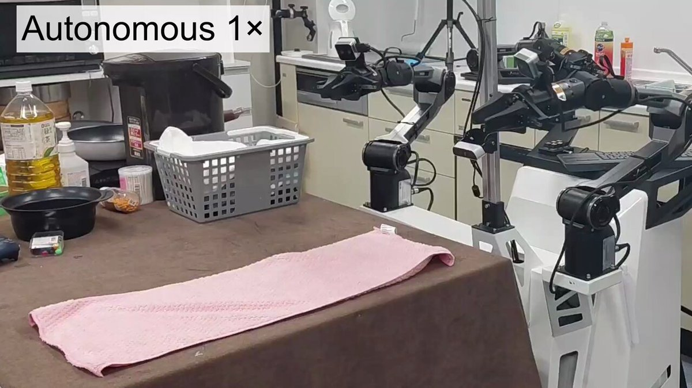
Haruhiko Okumuraさんがリポスト
チャッピーに課金する価値あるぞ
←課金前 課金後→
Haruhiko Okumuraさんがリポスト
最近ネット広告でよく見る「住所を入れるだけで資産を判定」みたいなサービスから情報が流れている可能性を指摘されていてぞっとした。
共同通信公式
@kyodo_official
住宅情報が匿流に漏れて被害か － 東京・小金井、複数回侵入され
https://
news.jp/i/143400984147
4536380?c=39550187727945729
…
ゆうきゆうマンガ家の精神科医マンガで心療内科(50巻以上＆アニメ化)さんがリポスト
同級生の社交辞令を言葉通りに取ってしまった男子。
ポン☆潤々さんがリポスト
『アイドルマスター SideM』
キリオのしなやかさ、九郎の熱意、翔真の美しさ……
「彩」のダンプラ動画が彩（さい）高すぎる！
#SideM #良いSHOW
https://
animatetimes.com/news/details.p
hp?id=1780280654&utm_source=twitter&utm_medium=social
…
なるせひろのりさんがリポスト
『32年の捏造が生んだ金脈の正体』
Colaboがヤバい
「10代少女の支援」名目で年間9381万円の寄付を集めてるんだけど
韓国の元慰安婦支援団体「正義連」のスポンサー名簿に「日本 Colabo」って載ってた
ドイツの慰安婦像の後援者にも載ってた
指摘された瞬間 正義連がHP削除
その正義連の前代表
Torishima / INTPさんがリポスト
「自分で作れることが第一であって交流に使いたい訳ではない」みたいなローカル勢とかずっとこんな感じだよね。ぼくが「自己実現派」みたいに呼んでるやつ。
Torishima / INTPさんがリポスト
「インスタント性」が良くないからな、みたいなやつ（インスタント性が低いAI絵はAI絵でも万フォロー万バズしますからね）
Torishima / INTPさんがリポスト
手間がかかってないAI利用は俎上にあがれない。コミュニケーションのためのコストを払ってるかどうかを見るから。
Torishima / INTPさんがリポスト
「絵だけが手間のかかるものを見るだけで消費できるのでコミュニケーションに使いやすい」みたいな話なんだと思う。文字が特段使いにくいんじゃなく絵が使いやすすぎる（音楽も映像もコミュニケーションには使いにくいよ）
Haruhiko Okumuraさんがリポスト
（長文）N高の報道に関しての個人的なコメント。
教育業界に入って実感したことですが、本当に変化を嫌う業界です。
業界全体もそうですが、個々の教員も保守的な人が多い。実は担任ひとりひとりが生徒に対して万能の権力者でもあるという側面があります。
Torishima / INTPさんがリポスト
.
@GOROman
さんや私は自宅に OCN エコノミー （3万8千円/月）を引いて、自作サーバを立ち上げていた。本気度というか、人に先駆けて何かをやることが面白い。
Keisuke Nishitani
@Keisuke69
これな。僕も同じようなことしてた。ネットワークの勉強するためだけにCiscoのルータやらスイッチも持ってた（中古だけど）。それなり以上の人たちってみんなそうな気がしてる。今だともっと安くもっと色々できるはず。結局本気度の違いな気がしてるがどうなんだろうか x.com/kenn/status/20…
ろじぱら ワタナベさんがリポスト
ねくまさんがリポスト
ここ数日、Xを開くたび『学園アイドルマスター』の姫崎莉波さんに関する話題が目に留まり、『アイドルマスター』シリーズの世界観について考えさせられました。
taiyo@H.I.F本戦day1
@taiyo_0127
個人勢と上場企業と、本来ならコンプライアンス面で大きく差が出るはずの両者がアイドルマスターとのコラボという一場面を通じて、アイマスブランドのユーザーからそれぞれ想定される物とは真逆の反応を引き出す事となりました。 x.com/imassc_prism/s…
なるせひろのりさんがリポスト
新登場の #ASUS #ProArt ラインナップの壮大な到来に備えてください — 私たちの最も革新的なAI傑作、#NVIDIA RTX Spark によって駆動されるものです。
#ASUS #ProArt #CPX2026
@NVIDIARTXSpark
リジスさんがリポスト
6月1日現在，洋上で確認できる「日本行き」タンカーは計58隻です。
- 緑：中東発 18隻
- 赤：喜望峰ルート 13隻・太平洋ルート 27隻
内訳は以下のとおり。
- 原油タンカー 29隻
- LPG，石油製品，化学・石油製品タンカー 29隻
Torishima / INTPさんがリポスト
じゅ…純利益250億ってマジか東映…
Branc（ブラン）
@BRANCJP
東映アニメーション2026年3月期決算：純利益250億7,000万円で過去最高。ヒット反動減を“海外版権”が吸収
https://
branc.jp/article/2026/0
6/01/2765.html?utm_source=twitter&utm_medium=social&utm_content=tweet
…
Torishima / INTPさんがリポスト
なんか貼れと言われた気がして。
国交省資料より抜粋。
https://
mlit.go.jp/common/0011709
42.pdf
…
＞ω＜さんがリポスト
爆発させました
Torishima / INTPさんがリポスト
みんな育ててるAIエージェントのガワは何使ってるんだろう
ちなみに私のはCodexです
Torishima / INTPさんがリポスト
そういえば最近のCodex、こういう環境壊す系のミス全く起きなくなった気がする……
Taitai2661,
@taitai2661dayo
ぶっ⚪︎すぞ
Torishima / INTPさんがリポスト
o1-pro に比べるとかなり安いね！
$150/月 イン、$600/月 アウト
Chubby
@kimmonismus
Claude Mythosは、入力トークン100万あたり25ドル、出力トークン100万あたり125ドルです。
Anthropicが今後数週間でリリースするMythosのようなモデルも、同様に高額になるだろうと推測します。
どうなるか見てみましょう
Torishima / INTPさんがリポスト
> 教育機関でありながら生徒より学校の実績づくりや親会社の赤字を埋める事が優先されている
専門学校の悪口はやめてください
マスクド・アナライズ 本「会社で使えるChatGPT」好評発売中
@maskedanl
文春砲を食らったN高等学校。
教育機関でありながら、生徒より学校の実績づくりや親会社の赤字を埋める事が優先されているとのこと。
ところで、4月に同じ内容が内部告発のnoteでバラされており、退職時期の一致からコレを書いた人が文春にタレコミしたっぽい。
https://
note.com/holy_nerine979
3/n/n591340e415e5
…
Torishima / INTPさんがリポスト
一次創作、冷静に考えて「ない作品」の話を延々としてるのヤバすぎる
先人は全員正気を失っているとしか考えられない
Torishima / INTPさんがリポスト
速報：NVIDIAとSharpaがGTC TaipeiでNVIDIA Isaac GR00Tリファレンスヒューマノイドロボットを発表しました—物理AI研究のための標準化されたオープンなハードウェアおよびソフトウェアリファレンスデザインです。
Torishima / INTPさんがリポスト
しかしAIコンパニオンのチャネルという観点でスタックチャンはすごいな。PCデスクトップマスコットとかLINEとかアプリとかスマートスピーカーとかいろいろやってきたけど、スタックチャンは常用のインターフェイスとして過去最高にいい。いて欲しいし話しかけたい触れ合いたいし役に立つ
MICHEE-N（ミッチー・Ｎ）さんがリポスト
【上伊那ぼたん 酔へる姿は百合の花】
ご縁があり撮影協力させて頂きました！第８話に蒲田カフェ登場
終売しているものもありますが、実際に提供している商品も作中に登場！
店内の照明やイス、テーブルや外観まですごく丁寧に再現して下さいました
ありがとうございました
#上伊那ぼたん
Torishima / INTPさんがリポスト
僕からはあまり細かいこと書かないようにと釘を刺されてるんですが、「半年経ったら半年分進んでいた」という点について少しだけ掘り下げておきます。
森山和道／ライター、書評屋
@kmoriyama
中国ロボット事情視察ツアー・第２弾「深圳編」に参加しました（報告）｜森山和道 ライター、書評屋 @kmoriyama
https://
note.com/kmoriyama/n/n8
25319e0ebf5?sub_rt=share_pb
…
なるせひろのりさんがリポスト
ホバークラフトみたいな滑らかな摺り足しそう。
MICHEE-N（ミッチー・Ｎ）さんがリポスト
先週から、アニメ「上伊那ぼたん、酔へる姿は百合の花」POPUP SHOPが #秩父市 の #じばさん商店 で始まっています
6月14日まで
皆さま、ぜひお越しください
#上伊那ぼたん
Torishima / INTPさんがリポスト
子供「微積分なんて役に立たないよ」
AIオタクぼく「Diffusionモデルでは各ステップの傾きを微分で求めれば、NNよりも軽量な計算で中間テンソルの代替値を算出でき、推論を高速化できるんですよ」
実験の結果、単純な線形外挿のほうが好成績だと気づいたぼく「微積分なんて役に立たないよ」
Torishima / INTPさんがリポスト
claudecode/codex ですぐ利用制限が来てキツいな、という人は Cursor Pro ($20) を契約して composer 2.5 (normal) を使うといいです。本当に10倍くらいは使えます。
Torishima / INTPさんがリポスト
オタクがあれだけ「超かぐや姫！の次は……トラペジウムを見てください！」って言ってたのに、Netflixは頑としてトラペジウムを配信してくれない。
映画『トラペジウム』公式
@trapezium_movie
⋰
下記プラットフォームにて配信決定！
本日から配信スタート
⋱
◆配信先：
PrimeVideo、dアニメストア、dアニメストア ニコニコ支店、dアニメストア For Prime Video、U-NEXT、アニメ放題、DMM TV、Lemino、Hulu、FOD、ビデオマーケット、music. jp、カンテレドーガ、バンダイチャンネル
Torishima / INTPさんがリポスト
これやってくれるけど、その代わり文字間・行間に含まれる要求の空間をどう切るかはAI任せになる。
もちろん、そこから「ここはこうじゃなくてー」とやりとりしてもいい。
でも最初から狙いを定めるなら、要求や設計は必要だと思いますよ。
Rootport
@rootport
世間では「Codexくん、〇〇作って」って丸投げするのがもはや当たり前なのか…
要件定義書を渡して、仕様書を書かせて、仕様書の細部を議論しながら煮詰めて、具体的な実装案まで落とし込んで、それからコーディングに進んでもらう……という俺のやり方は、わずか半年で時代遅れに…？
山人@耳すまさんがリポスト
【らしんばん新潟店/入荷情報】
パルフェ リメイク コンプリートパック
ソレヨリノ前奏詩 豪華版
が入荷いたしました
プレミア商品ですのでお見逃しなく
オンラインショップでも販売中です
・
https://
shop.lashinbang.com/products/detai
l/8119009?admin=1
…
・
https://
shop.lashinbang.com/products/detai
l/8116865?admin=1
…
#戯画 #minori
Torishima / INTPさんがリポスト
つまりは、人件費とAIトークン費を同じ土俵で比較しますよってことか、おっかねえ。
株式会社メルカリ
@mercari_inc
メルカリは、執行役員 CTO Japan Businessの木村俊也が2026年6月1日付で最高人事責任者（CHRO：Chief Human Resources Officer）および最高AI責任者（CAIO：Chief AI Officer）に就任することをお知らせいたします。
木村は、CHRO 兼 CAIO 兼 CTO Japan Businessとして新たに掲げるビジョン「HR for
うみゆき@AI研究さんがリポスト
「キオクシアの売上予想が10兆929億になったんだって？」
「営業利益？！」
さすらいのキオクシアマン
@kioxiaman
ゴールドマンサックス
キオクシアの29年３月期の連結営業利益を10兆929億円と予想。
なるせひろのりさんがリポスト
【速報】
22歳の未来ある女性の命を奪っておいて、堂々と無罪を主張する女の事件がマジで胸糞悪すぎる。全員に知ってほしい。
5年前に遡る
① 車で暴走し、アルバイトに向かう途中の22歳女性を死亡させた。
②
Torishima / INTPさんがリポスト
これはそう。今の、AIエージェントと一緒に並列フル稼働する8時間労働は、脳疲労が異常。
昭和のビジネスマンなんて、大人数で何時間も会議したり、何度も喫煙室に行ったり、数字を計算したり資料を作るのに何時間もかけたり、印刷に何十分もかけたり、移動に何時間もかけたりしながらの長時間だし。
凜律思考
@RITUx6qb
昔の8時間労働と今の8時間労働を同一視するな。
AIエージェントに指示を出し、出力をレビューし、人間を動かし、コードを書き、設計をする。 現代のエンジニアに求められているのは、もはや「エンジニアリング」という職種を超えた「脳の酷使」。 x.com/mhl_bluewind/s…
Torishima / INTPさんがリポスト
文春砲を食らったN高等学校。
教育機関でありながら、生徒より学校の実績づくりや親会社の赤字を埋める事が優先されているとのこと。
ところで、4月に同じ内容が内部告発のnoteでバラされており、退職時期の一致からコレを書いた人が文春にタレコミしたっぽい。
【退職エントリ】日本の教育がドワンゴの「魔法の杖」にされてしまう前に｜角川ドワンゴ学園を退職しました
Torishima / INTPさんがリポスト
━━‥
#アポカリプスホテル 星雲賞ダブル受賞！
‥━━
オリジナルTVアニメ「アポカリプスホテル」が、本日発表の第57回星雲賞を受賞いたしました！
メディア部門でアニメが、コミック部門で #竹本泉 先生の #アポカリプスホテルぷすぷす が受賞しています。
Torishima / INTPさんがリポスト
アルトマンが、OpenAIで積極的にロボット人材採用を行なっていることを明言。かつてロボット事業を捨てたOpenAIが再びPhysical AIの世界の最前線で戦う模様。
Sam Altman
@sama
OpenAI Roboticsでは採用を行っています。社会に役立つロボットのプログラミングと製造を支援する、優れたフルスタックハードウェア、オペレーション、システム、MLエンジニアを募集しています。
いるか@心が酒びたっているんださんがリポスト
人間には胃酸という強力な防御機構があるので、微生物の混じった水やくっついたものを食べてもそう簡単に小腸まで侵入してこない。だけど、
- 胃酸に強い（ノロウイルス、寄生虫、…）
- 大量に摂ると胃酸を突破（サルモネラ、ビブリオ、…）
-
Torishima / INTPさんがリポスト
流石に解説不要と思っていましたが気づかない人がいるとこわいので。これはAIっぽい文体をネタにしたジョークです
Torishima / INTPさんがリポスト
この話題、プログラマ気質の厳密な会話を何となくフワッと空気を読んで良いようにやってくれれば良いからとゴリ押しする脳筋タイプの人が「あいつらIT系は性格が悪い」と言ってるだけだと思う
とりにく
@tori29umai
IT業界の人は性格悪いって話、個人的にはピンとこない。アホの私にもめっちゃすり合わせ（あるいは諦めて足切り）してくれるから「アホレベルに話を合わせてくれてありがとう！」ってなる。
（知識不足故に）話が通じない人を相手にするのに慣れている人が多いと感じる。すり合わせする意志がある
Torishima / INTPさんがリポスト
@UseCorgi
をdisるつもりはないけど、誰か俺のバカな頭に説明してくれよ。Corgiがマンハッタン計画に少しでも近いものに見える理由をさ。もしくは、BenがただLinkedInに投稿してるだけなのか？
Ben Cohen
@blc_16
@AnthropicAI を辞めることにしました
こんなに早く言うとは思ってもみませんでした。AGI の追求は本当に私の人生の仕事でしたが、それ以上に重要なことが現れました。
1942
Torishima / INTPさんがリポスト
今無職だけど月100万円くらいは何故かあるので生きています ありがとう
null-sensei
@GOROman
サブスクで一人5ドルで九百人くらい居ると毎月60万円とか振り込まれていいですよ x.com/tori29umai/sta…
Torishima / INTPさんがリポスト
そうなる。直近2年ぐらいで生き残れるのは、初回の面接に自作のソフトウェアを持ち込めるタイプの人ぐらいでは。あとはフィジカルモンスターとコミュ力お化け。
ブルームバーグニュース
@BloombergJapan
AIが奪うインターンの席、初級職減少への懸念－学生の応募競争が激化
https://
bloomberg.com/jp/news/articl
es/2026-05-31/TFSWKQKK3NYD00?taid=6a1cb9f64b8aea00015dc8cc&utm_campaign=trueanthem&utm_content=japan&utm_medium=social&utm_source=twitter
…
Torishima / INTPさんがリポスト
lol やっと気づいたんだけど、codexでコンテキストウィンドウの円を再有効化できるんだね。
神に感謝
Torishima / INTPさんがリポスト
ところでMAPPAや東映やシンエイやトムスみたいな会社にカリスマが居て、その人を目当てにそれ程人が集まっているんだろうか？むしろ中規模程度の会社のほうがカリスマ的な中心人物を軸に会社を維持していて、大きい会社は別のことで人が集まって成り立っているような印象だけど（安定とか企画数とか）
Torishima / INTPさんがリポスト
懐かしい…
1000台くらいだったと思うけど、これだけあると始終どれか調子悪くなっててシスアドの人が直して回ってた。
あとまあ、30階に置かなくても良かったのでは、とは思う。

せっき～＠インディー スマホゲーム開発者
@seki_seki_seki
ＦＦ９当時のスクウェア社内の、恐ろしい数のレンダリングサーバーの動画
（奥までぎっしり） x.com/seki_seki_seki…
Torishima / INTPさんがリポスト
……という話を、今週何本か記事にする予定。1本は入稿済み。
Torishima / INTPさんがリポスト
1つや2つはともかく、自分が求めるものを常に指示できるなら、それはかなり大したもの。創作活動に身を置いた方がいい。
考えるほど簡単じゃなく、できたものから選ぶ形が支持され続けるだろう。
もちろん、作る側のエコシステムいは変わると思うし、「AIで選べるシステム」は生まれる。
Torishima / INTPさんがリポスト
AIでの自作コンテンツと消費の関係は「自炊とレストラン」の関係に似ている。
自炊でレストランを超えたり別の価値観を見出すことはできる（これがまさに同人活動の世界）が、「買った方が安いね晩のおかず」もまた真理で、AIがあれば……という話とはだいぶ違うように考えている。
Torishima / INTPさんがリポスト
mythosが1mあたり125ドルの噂
まあ、opusがついこの間まで75ドルだったことを思うと驚きはないですね
Chubby
@kimmonismus
Claude Mythosは、入力トークン100万あたり25ドル、出力トークン100万あたり125ドルです。
Anthropicが今後数週間でリリースするMythosのようなモデルも、同様に高額になるだろうと推測します。
どうなるか見てみましょう
Torishima / INTPさんがリポスト
まあ昨今のAIブームはみんながAI使えば幸せになるかっていうとそうではなくて、使えないと不幸が訪れる、淘汰される側になりかねないので人より早く使ってポジション取りましょうって話でしかないよな
Torishima / INTPさんがリポスト
ChatGPTになんで効くとか寄せるとか好きなのって聞くと、zennだのqiitaだのにあるコンサル系記事によくあったから、と返答してきたが、まあGPTに単語の理由内省させてもハルだからな
Torishima / INTPさんがリポスト
そこに気づいている人は、正直トップ1%です。ニュースでは、タイトルに「勝ち筋」などの単語が入っていることが**効く**。ここから一気に世界トップでバズるニュースに寄せていきます。
MITsuo Yoshida | 広告, PR
@ceekz
去年9月から「勝ち筋」を含むニュース記事が増えてるんだけど、何が起きてるんだ…。なんかすごく負けそうな予感するんですけど。 x.com/ceekz/status/2…
リジスさんがリポスト
Q. ナウルに台風かサイクロン来ますか？
A. こない
Torishima / INTPさんがリポスト
Claude Mythosは、入力トークン100万あたり25ドル、出力トークン100万あたり125ドルです。
Anthropicが今後数週間でリリースするMythosのようなモデルも、同様に高額になるだろうと推測します。
どうなるか見てみましょう
Torishima / INTPさんがリポスト
やばい天才かも
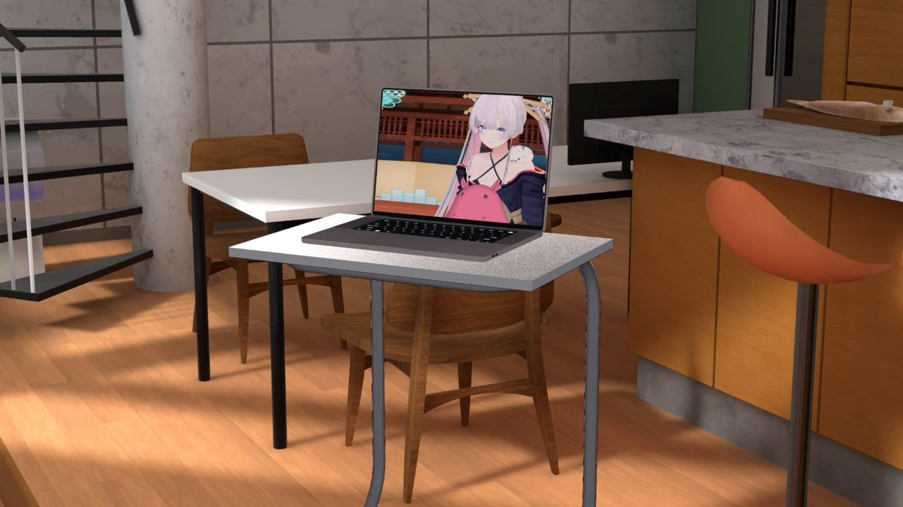
とりしま (Sub I/O)さんがリポスト
Torishima / INTPさんがリポスト
1枚目:元画像
2枚目:「AAアート」として投稿されたもの（AI製疑惑あり？）
3枚目:元画像をAA変換ツールに通したもの
4枚目:2ch/5ch文化圏のAA職人によると思われる作
このツリーだけでこれだけ集まった
ダレルタイター
@DaTa_jp
アスキーアートってこういう風なものを言うんじゃなかったけ…？ x.com/VTSYBe7CDp9543…
ろじぱら ワタナベさんがリポスト
この動画好き
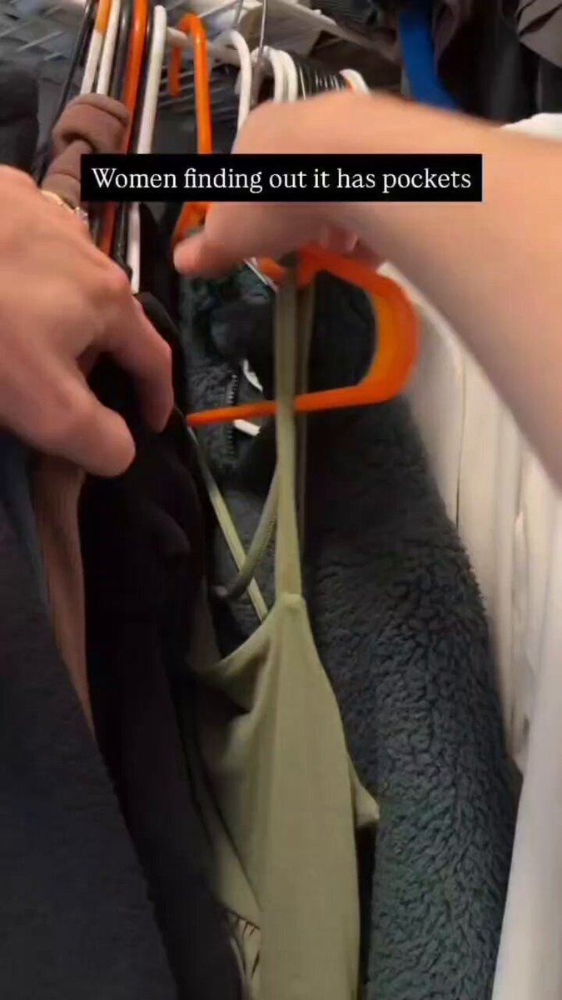
ladybird 暑いの嫌い
@wwladybirdww
日本の景気後退してからの社会しか知らない世代は知らないだろうけど、昔の女性用スーツにはでっかいポケット付いてたよ。
スマホが無かった時代にスマホが入るサイズのポケットがあった。
日本が貧しくなって女性用のポケットだけ省略された。
拾い絵だけど、私も似た感じのスーツ持ってた。 x.com/LCW_mofu/statu…
Torishima / INTPさんがリポスト
#5月を写真4枚で振り返る
あまりにも住所不定すぎて4枚で振り返れない、w
新規で印象に残った劇場は稚内、御成座、福山、ヱビスシネマかなあ。海老7の超最終回見たり、須坂再訪で上映中止になったり、岳南7001に1週間だけHM出たりNIGHTHIKEや山梨特別上映なども。
ブルみゅも昼夜現地参戦！楽しかった
貝さんさんさんがリポスト
(先行配信の10話ではなんと私が声優デビューしております…よかったら探して…ね…)
貝さんさんさんがリポスト
９食目 ご視聴ありがとうございました！ #メイ食べ
いるか@心が酒びたっているんださんがリポスト
平成★GALな祥子さんのrkgk小話。
粕谷さんが新しく出してた10投レシピやってみた
豆：20g 中煎り
挽目：30click(TIMEMORE C3 MAX PRO)
湯量：300g
湯温：93℃
失敗
C40の最大クリック数が不明で実用最大が52程度という記事から参考にしたけど30(最大36)は粗すぎの薄すぎだった
かろうじて紅茶みたいと思えばまぁ！
貝さんさんさんがリポスト
メイドさんは食べるだけ9食目、Bパートで総作監やらせてもらってます。
例によって色ついたもん見てないので猫耳とかの配色違ってるかも…
#メイドさんは食べるだけ
#メイ食べ
Torishima / INTPさんがリポスト
ぶっ⚪︎すぞ
Torishima / INTPさんがリポスト
これはマジでそう思う。最初からソフトウェアエンジニアやってたけど、最近はさすがにいろいろなことが効率化されすぎていて労働強度が高すぎる。いくつものAgentとチームメンバーにそれぞれべ地の指示を出してそれをチェックしながら自分の仕事をするとか、8時間ずっと集中するのはキツイ。
冴えない10年目
@utu_kokuhuku18
これは自分がマネジメント層になり、ほかの社員を見たり採用活動する中でわかってきた。今の労働基準法の働き方は、若い人にはもう合わない。そもそもITで効率よくしすぎて平日に余暇がなくなり、疲労度合いは限界にきている。 x.com/utsurotaku710/…
Torishima / INTPさんがリポスト
新宿駅に「元の地面」は存在するのだろうか・・・。
菊地秀行（デザイナー）
@yeager1947
「新宿の未来をのぞく仮設構台ツアー」に参加してきました！
新宿西口の再開発工事用の仮設構台＝（旧小田急デパート3階に相当）から新宿駅の工事現場を見下ろす！超面白かった！！
落としブタ。
貝さんさんさんがリポスト
#今月描いた絵を晒そう
Torishima / INTPさんがリポスト
1日1回以上、「衝撃」や「革命」や「速報」をツイートしてるアカウントをだいたいアンフォローした。
Torishima / INTPさんがリポスト
車もそうなんだけど、素人には「後から変えられる場所」と、最初しかできないことの区別がつかないんですよ。
つ
@tsu_nyambda
何千万円もする注文住宅なのに、家の寿命を決める構造や断熱は数分で決まり、後から変えられる壁紙やコンセント位置で何時間も揉めて夫婦喧嘩になる現象。パーキンソンの凡俗法則って言うらしい。
人間は難しい問題から目を背け、身近な問題に固執してしまうのだ。
Torishima / INTPさんがリポスト
Emacs使っててなんか変だと思ったら、Google ChromeがグローバルにControl-Gを奪ってるのか。
これは地球から急に酸素がなくなったぐらいヤバイ。
リジスさんがリポスト
映画館のロビーでおじいさんコンビが「映画中の尿意」をシリアス語らっていたのだが「そういえば、映画見る前に餅食べるといいって孫が言ってたなァー」というのに「俺等が餅なんか食ったら映画見る前に三途の川を見ることになるぞ」と返して二人は爆笑してたが笑うに笑えねぇ(ﾉ∀`)
Torishima / INTPさんがリポスト
劇場でポスターになっている「メインビジュアル」に出てくるこのマイク、作中一度も出てこないよな…。
というかかぐやがマイク使って歌っているシーンが数えるほどしかない。
Torishima / INTPさんがリポスト
Notion AIでOpus4.8使ってたんだけどウェブサーチ中にサラッと怖いこと言ってて目が覚めた
CRYSTALiA公式さんがリポスト
『ディメンション凸ラバース‼︎』完パケいただきましたー！！
巷ではとっても大人気のようで……楽しんでいただけてすごく、かなり嬉しいです。ありがとうございます！！
オフィ通専用小冊子もいただきましてみてて楽しいかわいいハッピーです
#とつラバ
山人@耳すまさんがリポスト
探偵シナリオに備えているヒカルくん
川口"k-shi"貴志 / ゲームの音響や触覚でUXを考える人さんがリポスト
- 共通
- インゲームプレビュー用バイナリの廃止
- Atom Craft UI改修
- サイドチェイン機能改修
- 3Dポジショニング再生関連機能追加
詳細はテクニカルサポートサイトをご確認ください。
https://
criware.jp/adx2
川口"k-shi"貴志 / ゲームの音響や触覚でUXを考える人さんがリポスト
CRI ADX SDK Ver.2.31.00 をリリースしました。
【対象】
- PC, Android, iOS, PS4, PS5, Scarlett/XboxOne(GDK), Switch, Switch 2
【内容】
- 一部環境
- 開発環境をVS2019からVS2022へ移行
- PC
- x86(32bit)版ライブラリ同梱終了
- ARM64版ライブラリ同梱開始
【Ci-en更新】
『ディメンション凸ラバース!!』
突然ですが、
現在メタライズアートの販売を企画中です！
商品の絵柄に関してアンケートのご協力お願いします！
ぺろ先生が用意してくれた絵柄の中から、
欲しい！と思ったものをお答えください！
#とつラバ
貝さんさんさんがリポスト
８食目 ご視聴ありがとうございました！
#メイ食べ
山人@耳すまさんがリポスト
anemoi / key 聖地巡礼その24
六花ちゃん√で泣けた。
羽幌町のオロロラインです。
#anemoi
#アネモイ
#聖地巡礼
山人@耳すまさんがリポスト
anemoi / key 聖地巡礼その23
苫前町のローソク岩が、モデルではないかと思われます。
#anemoi
#アネモイ
#聖地巡礼
貝さんさんさんがリポスト
7食目 ご視聴ありがとうございました！ #メイ食べ
貝さんさんさんがリポスト
メイドさんは食べるだけ7食目、参加パートはBパートらしい？
湯呑みは色付いたもの見てないので色違ってるかも…というかたぶん違う
#メイドさんは食べるだけ
#メイ食べ
テスラさんがリポスト
輿水畏子さんがリポスト